ON THE BOOK / 2026.09.08 / LOCAL RUNTIME
QA · UAT 실행 결과
사용자 화면과 관리자 화면의 135개 걸킨 시나리오를 Playwright MCP로 실행했습니다.
새 책 생성부터 모델 배치·공개·사용자 독서까지 통과했습니다. 저장 표시와 기본 모델 편집 등의 문제를 보완한 뒤 최종 수용 승인을 권장합니다.
요약과 재현 방법 · 전체 결과표 · 원본 결과·재시험 이력
Microsoft Edge 152.0.4191.66 · Playwright MCP 1.63.0-alpha-2026-08-31 · 원본 데이터 변경 없음
실제 사용자 승인, 배포 환경, iOS/Safari·Firefox·실기기 및 부하 검사는 포함하지 않습니다.
시나리오별 결과
135개 표시
통과C01 · client-basic
첫 화면과 실제 3D 장면
시나리오와 실행 증거
Given 공개된 도서가 있는 새 브라우저
When 사용자 첫 화면에 접속한다
Then 책 제목과 시작 버튼 및 3D 화면이 보인다
걸킨 파일 · 실행 기록 · 원본 화면
1100ms · http://127.0.0.1:4317/client/
통과C02 · client-basic
처음 탐험할 때 사용 안내
시나리오와 실행 증거
Given 탐험 기록이 없는 사용자
When 책 속으로 들어가기를 누른다
Then 사용 안내가 열리고 닫은 뒤 탐험할 수 있다
걸킨 파일 · 실행 기록 · 원본 화면
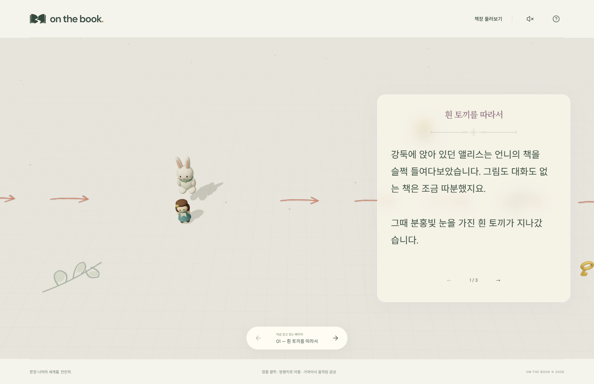
3086ms · http://127.0.0.1:4317/client/
통과C03 · client-basic
반복 방문 시 안내를 중복 표시하지 않음
시나리오와 실행 증거
Given 사용 안내를 이미 본 사용자
When 책 속으로 다시 들어간다
Then 안내창 없이 탐험을 시작한다
걸킨 파일 · 실행 기록 · 원본 화면
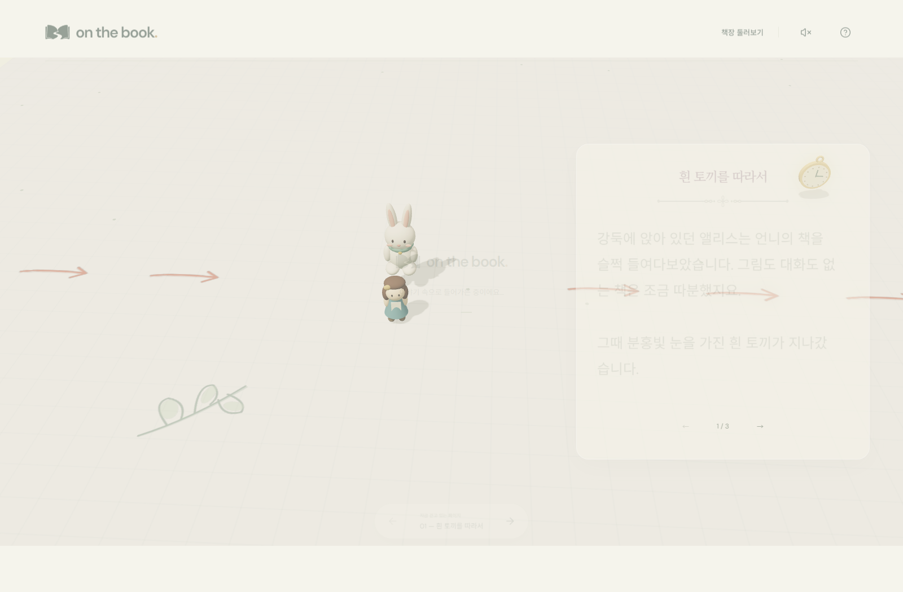
3196ms · http://127.0.0.1:4317/client/
통과C04 · client-basic
도서 선택과 표지 정보
시나리오와 실행 증거
Given 사용자가 첫 화면에 있다
When 책장에서 오즈의 마법사를 선택한다
Then 선택한 책 제목과 작가 및 장면 수가 표시된다
걸킨 파일 · 실행 기록 · 원본 화면
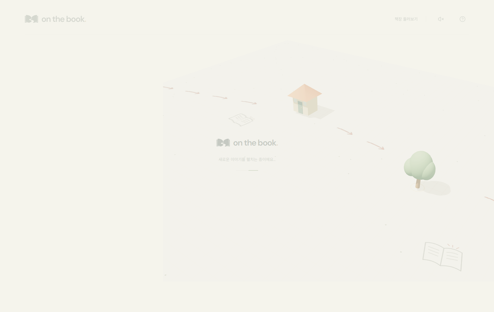
2552ms · http://127.0.0.1:4317/client/?book=oz
통과C05 · client-basic
사용 안내의 키보드 닫기와 초점 복귀
시나리오와 실행 증거
Given 첫 화면에서 안내 버튼에 초점을 둔다
When 안내를 열고 Escape를 누른다
Then 안내가 닫히고 원래 버튼으로 초점이 돌아온다
걸킨 파일 · 실행 기록 · 원본 화면
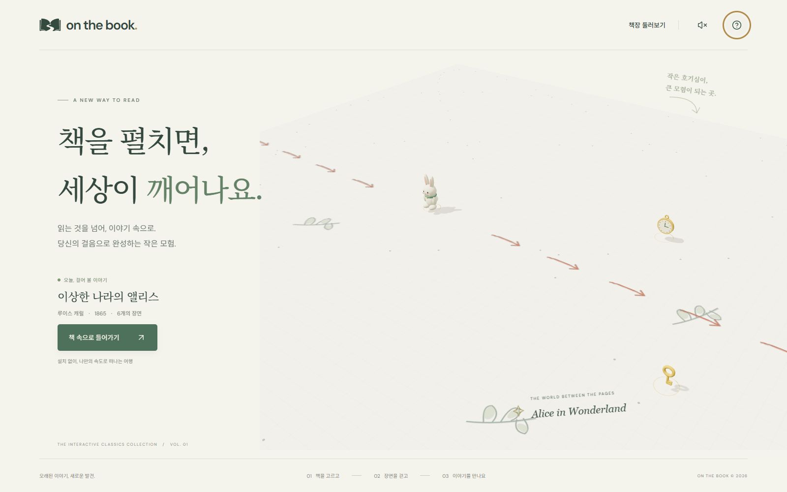
2014ms · http://127.0.0.1:4317/client/
통과C06 · client-basic
소리 켜기와 끄기
시나리오와 실행 증거
Given 사용자 화면에서 소리가 꺼져 있다
When 소리 버튼을 두 번 누른다
Then 버튼의 이름과 켜짐 상태가 순서대로 바뀐다
걸킨 파일 · 실행 기록 · 원본 화면
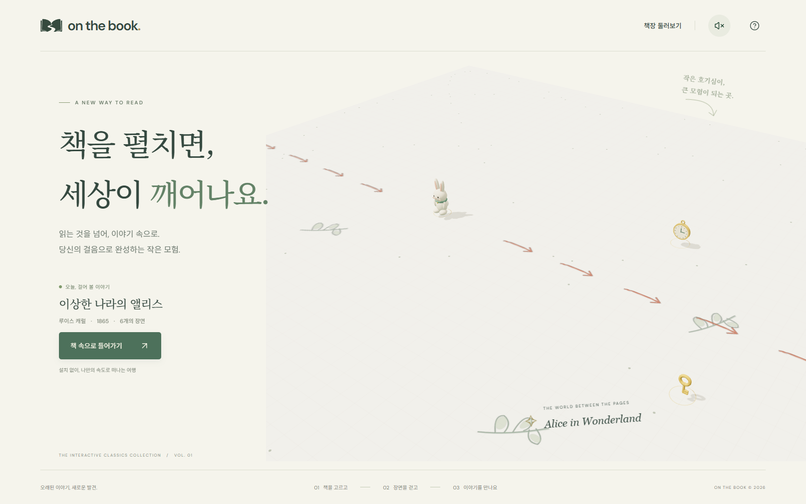
2148ms · http://127.0.0.1:4317/client/
통과C07 · client-basic
첫 챕터의 이전 이동 제한
시나리오와 실행 증거
Given 첫 챕터에 접속한 사용자
When 챕터 이동 버튼을 확인한다
Then 이전 버튼은 비활성이고 다음 버튼은 활성이다
걸킨 파일 · 실행 기록 · 원본 화면
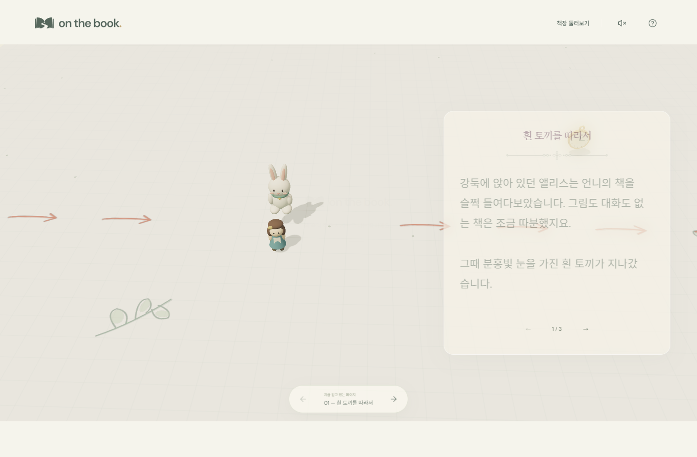
1080ms · http://127.0.0.1:4317/client/?book=alice&chapter=alice-1
통과C08 · client-basic
마지막 챕터의 다음 이동 제한
시나리오와 실행 증거
Given 마지막 챕터에 접속한 사용자
When 챕터 이동 버튼을 확인한다
Then 다음 버튼은 비활성이고 이전 버튼은 활성이다
걸킨 파일 · 실행 기록 · 원본 화면
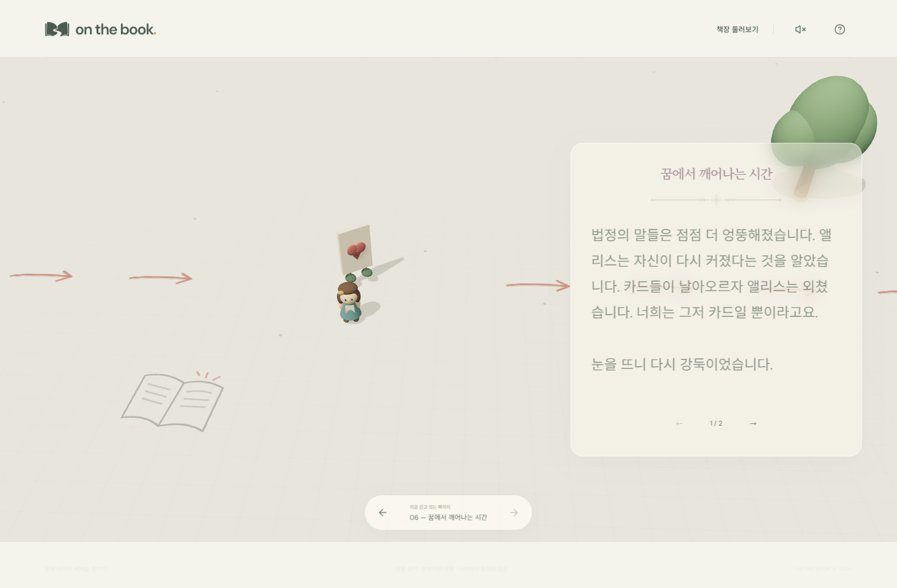
1147ms · http://127.0.0.1:4317/client/?book=alice&chapter=alice-6
통과C09 · client-navigation
다음 챕터와 이전 챕터 이동
시나리오와 실행 증거
Given 첫 챕터에 있는 사용자
When 다음 버튼을 누른 뒤 이전 버튼을 누른다
Then 장면 이름과 주소가 각각 둘째 및 첫째 챕터로 바뀐다
걸킨 파일 · 실행 기록 · 원본 화면
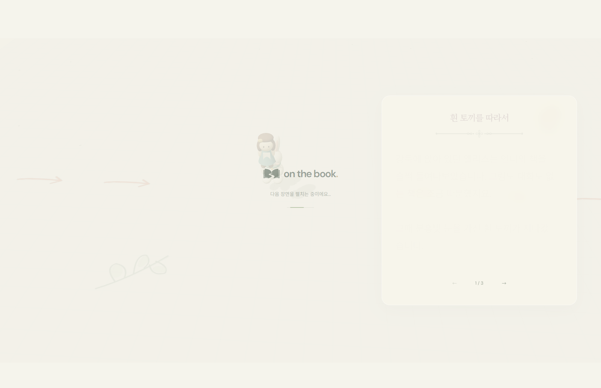
3519ms · http://127.0.0.1:4317/client/?book=alice&chapter=alice-1
통과C10 · client-navigation
마지막 방문 챕터 이어 읽기
시나리오와 실행 증거
Given 셋째 챕터를 방문해 기록이 저장되었다
When 홈으로 돌아가 책 속으로 들어간다
Then 셋째 챕터부터 이어서 시작한다
걸킨 파일 · 실행 기록 · 원본 화면
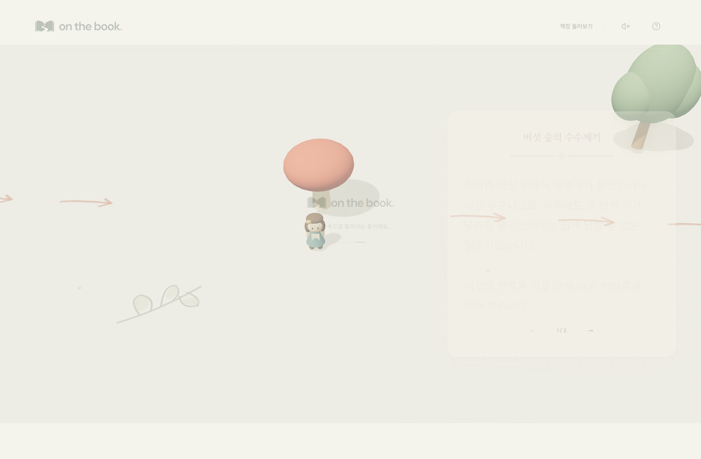
4078ms · http://127.0.0.1:4317/client/
통과C11 · client-navigation
잘못된 책 주소에서 복구
시나리오와 실행 증거
Given 존재하지 않는 책 식별자가 주소에 있다
When 사용자 화면을 연다
Then 오류 없이 첫 공개 도서를 표시한다
걸킨 파일 · 실행 기록 · 원본 화면
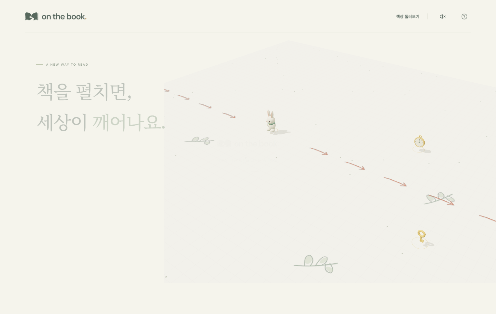
1099ms · http://127.0.0.1:4317/client/?book=unknown-qa
통과C12 · client-navigation
잘못된 챕터 주소에서 복구
시나리오와 실행 증거
Given 올바른 책과 존재하지 않는 챕터 주소
When 사용자 화면을 연다
Then 첫 챕터를 탐험할 수 있다
걸킨 파일 · 실행 기록 · 원본 화면
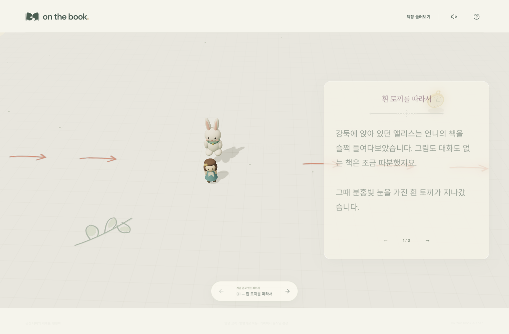
1270ms · http://127.0.0.1:4317/client/?book=alice&chapter=unknown-qa
통과C13 · client-navigation
지도에서 현재 챕터 재선택
시나리오와 실행 증거
Given 둘째 챕터 탐험 중이다
When 지도에서 같은 챕터를 다시 선택한다
Then 지도는 닫히고 장면과 주소가 유지된다
걸킨 파일 · 실행 기록 · 원본 화면
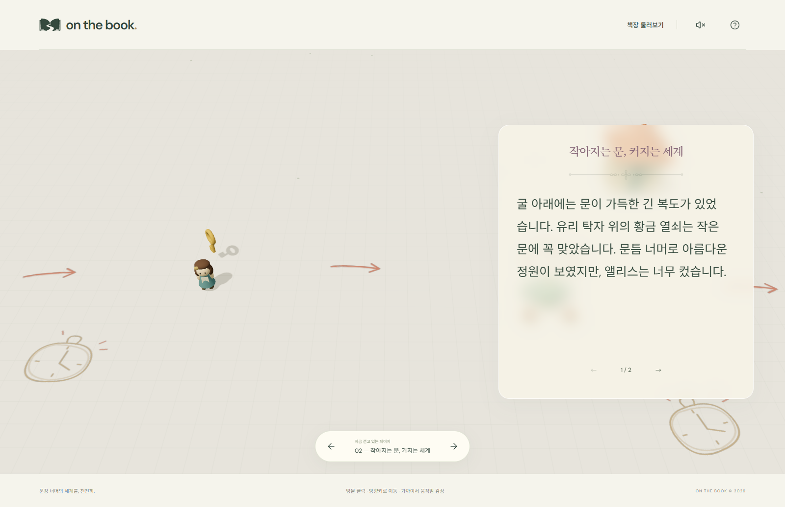
2038ms · http://127.0.0.1:4317/client/?book=alice&chapter=alice-2
통과C14 · client-navigation
글귀 페이지 앞뒤 이동과 끝 경계
시나리오와 실행 증거
Given 첫 챕터 메인 모델 근처에 도착했다
When 글귀를 끝까지 넘긴 뒤 한 페이지 돌아간다
Then 글귀가 바뀌고 첫 페이지와 마지막 페이지의 이동이 제한된다
걸킨 파일 · 실행 기록 · 원본 화면
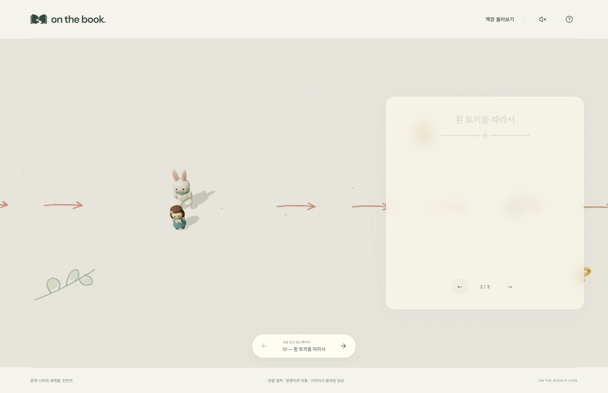
1552ms · http://127.0.0.1:4317/client/?book=alice&chapter=alice-1
통과C15 · client-navigation
모델에서 멀어지면 독서 창 숨김
시나리오와 실행 증거
Given 메인 모델 근처에서 글귀가 보인다
When 아래 방향키를 눌러 충분히 멀어진다
Then 글귀가 숨겨지고 이동을 계속할 수 있다
걸킨 파일 · 실행 기록 · 원본 화면
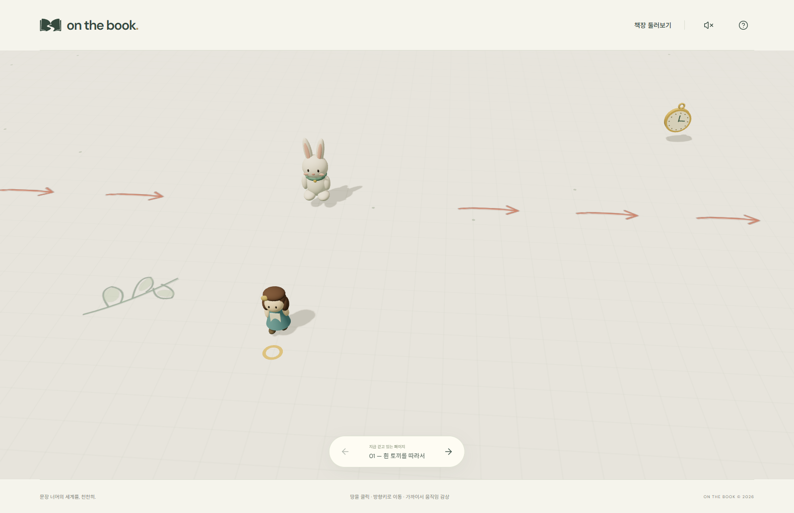
1802ms · http://127.0.0.1:4317/client/?book=alice&chapter=alice-1
통과C16 · client-navigation
도서 전환 후 다른 책의 첫 장면
시나리오와 실행 증거
Given 앨리스 탐험 중이다
When 책장에서 오즈를 고르고 탐험을 시작한다
Then 오즈의 첫 챕터와 해당 책의 지도를 표시한다
걸킨 파일 · 실행 기록 · 원본 화면
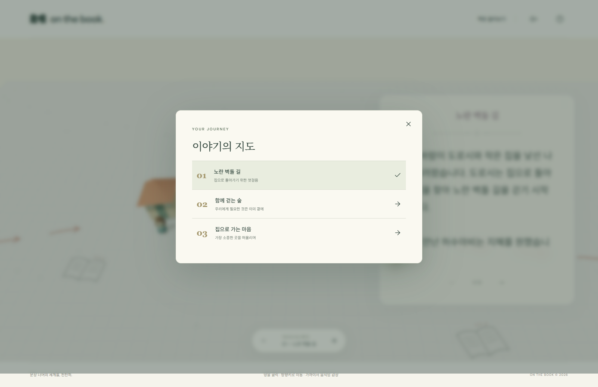
5671ms · http://127.0.0.1:4317/client/?book=oz
통과C17 · client-chapters
공개 챕터 직접 접속: 흰 토끼를 따라서
시나리오와 실행 증거
Given alice의 alice-1가 공개되어 있다
When 해당 챕터 주소로 접속하고 독서 창을 확인한다
Then 챕터 제목과 비어 있지 않은 본문 및 3D 장면을 표시한다
걸킨 파일 · 실행 기록 · 원본 화면
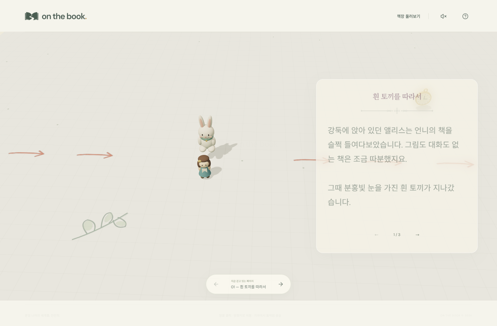
1065ms · http://127.0.0.1:4317/client/?book=alice&chapter=alice-1
통과C18 · client-chapters
공개 챕터 직접 접속: 작아지는 문, 커지는 세계
시나리오와 실행 증거
Given alice의 alice-2가 공개되어 있다
When 해당 챕터 주소로 접속하고 독서 창을 확인한다
Then 챕터 제목과 비어 있지 않은 본문 및 3D 장면을 표시한다
걸킨 파일 · 실행 기록 · 원본 화면
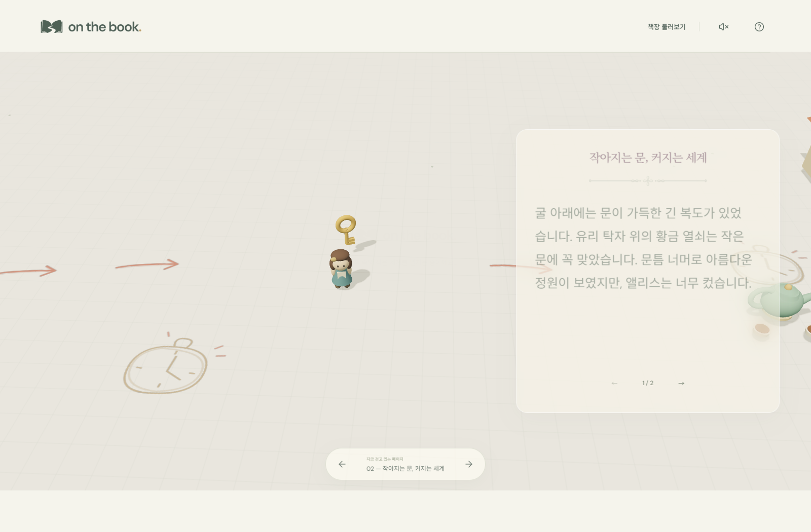
1040ms · http://127.0.0.1:4317/client/?book=alice&chapter=alice-2
통과C19 · client-chapters
공개 챕터 직접 접속: 버섯 숲의 수수께끼
시나리오와 실행 증거
Given alice의 alice-3가 공개되어 있다
When 해당 챕터 주소로 접속하고 독서 창을 확인한다
Then 챕터 제목과 비어 있지 않은 본문 및 3D 장면을 표시한다
걸킨 파일 · 실행 기록 · 원본 화면
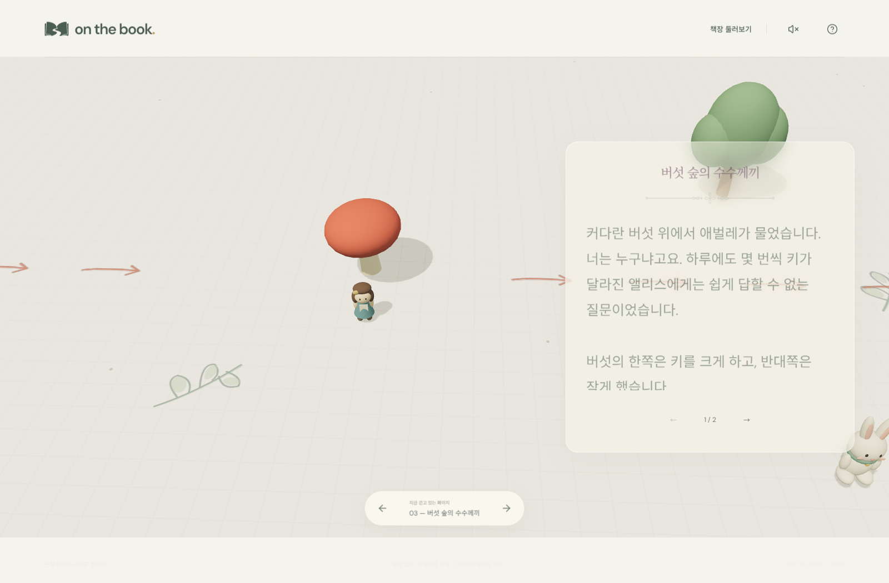
1056ms · http://127.0.0.1:4317/client/?book=alice&chapter=alice-3
통과C20 · client-chapters
공개 챕터 직접 접속: 끝나지 않는 티 파티
시나리오와 실행 증거
Given alice의 alice-4가 공개되어 있다
When 해당 챕터 주소로 접속하고 독서 창을 확인한다
Then 챕터 제목과 비어 있지 않은 본문 및 3D 장면을 표시한다
걸킨 파일 · 실행 기록 · 원본 화면
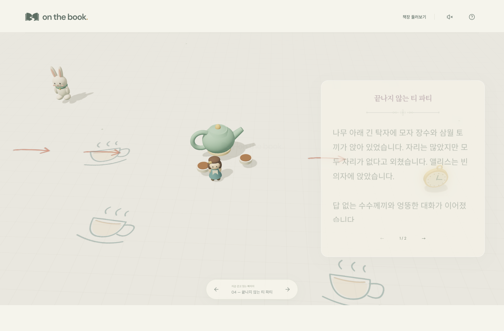
1055ms · http://127.0.0.1:4317/client/?book=alice&chapter=alice-4
통과C21 · client-chapters
공개 챕터 직접 접속: 장미 정원의 여왕
시나리오와 실행 증거
Given alice의 alice-5가 공개되어 있다
When 해당 챕터 주소로 접속하고 독서 창을 확인한다
Then 챕터 제목과 비어 있지 않은 본문 및 3D 장면을 표시한다
걸킨 파일 · 실행 기록 · 원본 화면
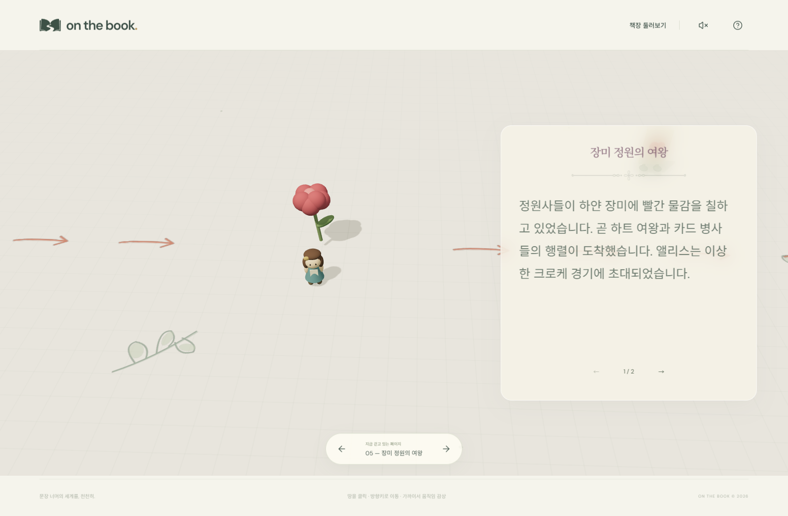
1120ms · http://127.0.0.1:4317/client/?book=alice&chapter=alice-5
통과C22 · client-chapters
공개 챕터 직접 접속: 꿈에서 깨어나는 시간
시나리오와 실행 증거
Given alice의 alice-6가 공개되어 있다
When 해당 챕터 주소로 접속하고 독서 창을 확인한다
Then 챕터 제목과 비어 있지 않은 본문 및 3D 장면을 표시한다
걸킨 파일 · 실행 기록 · 원본 화면
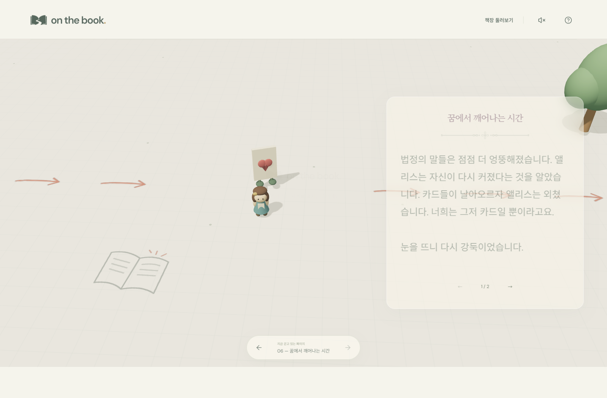
1118ms · http://127.0.0.1:4317/client/?book=alice&chapter=alice-6
통과C23 · client-chapters
공개 챕터 직접 접속: 노란 벽돌 길
시나리오와 실행 증거
Given oz의 oz-1가 공개되어 있다
When 해당 챕터 주소로 접속하고 독서 창을 확인한다
Then 챕터 제목과 비어 있지 않은 본문 및 3D 장면을 표시한다
걸킨 파일 · 실행 기록 · 원본 화면
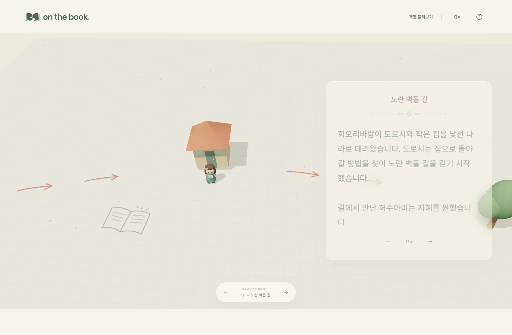
1051ms · http://127.0.0.1:4317/client/?book=oz&chapter=oz-1
통과C24 · client-chapters
공개 챕터 직접 접속: 함께 걷는 숲
시나리오와 실행 증거
Given oz의 oz-2가 공개되어 있다
When 해당 챕터 주소로 접속하고 독서 창을 확인한다
Then 챕터 제목과 비어 있지 않은 본문 및 3D 장면을 표시한다
걸킨 파일 · 실행 기록 · 원본 화면
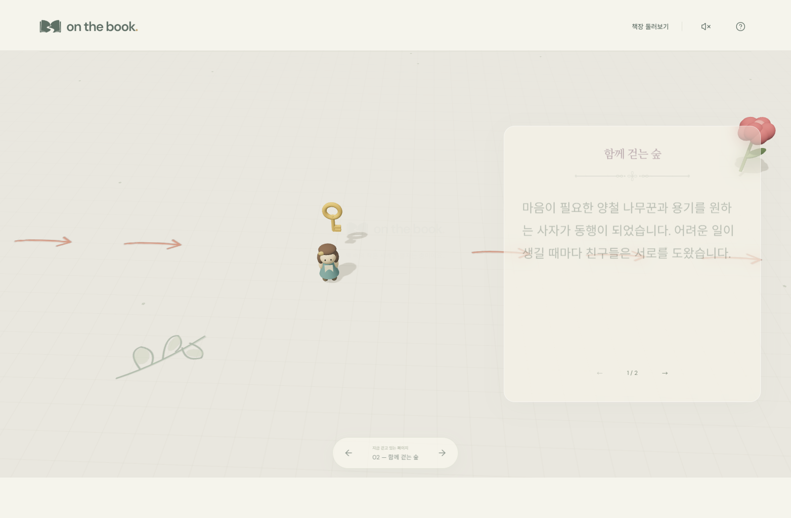
969ms · http://127.0.0.1:4317/client/?book=oz&chapter=oz-2
통과C25 · client-chapters
공개 챕터 직접 접속: 집으로 가는 마음
시나리오와 실행 증거
Given oz의 oz-3가 공개되어 있다
When 해당 챕터 주소로 접속하고 독서 창을 확인한다
Then 챕터 제목과 비어 있지 않은 본문 및 3D 장면을 표시한다
걸킨 파일 · 실행 기록 · 원본 화면
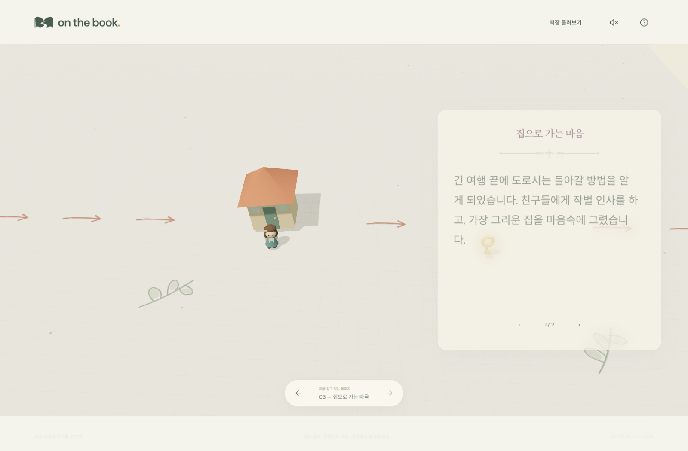
1032ms · http://127.0.0.1:4317/client/?book=oz&chapter=oz-3
통과R1 · client-recovery
손상된 방문 기록 복구 1
시나리오와 실행 증거
Given 브라우저 방문 기록이 올바른 형식이 아니다
When 사용자 화면을 열고 탐험을 시작한다
Then 화면이 멈추지 않고 첫 챕터를 탐험할 수 있다
걸킨 파일 · 실행 기록 · 원본 화면
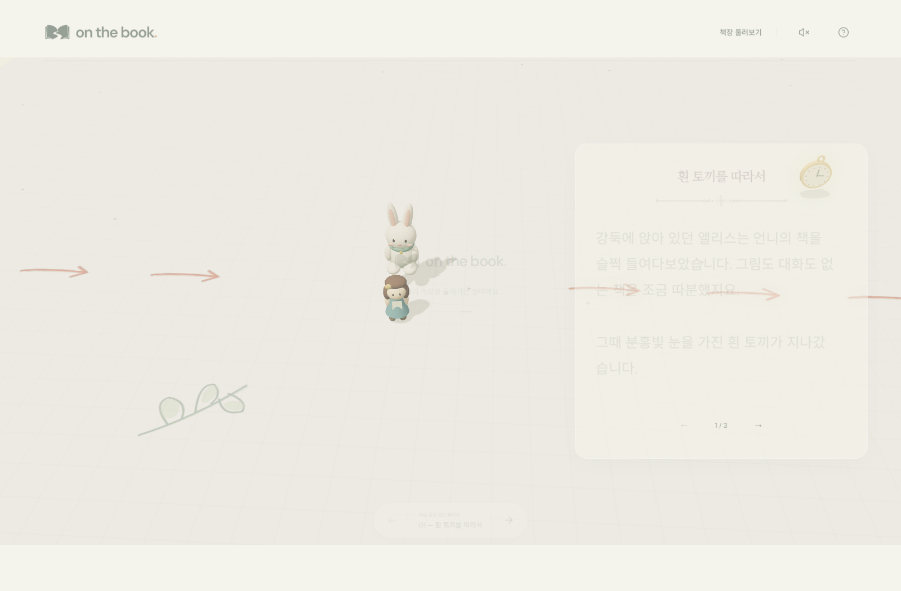
2388ms · http://127.0.0.1:4317/client/
통과R2 · client-recovery
손상된 방문 기록 복구 2
시나리오와 실행 증거
Given 브라우저 방문 기록이 올바른 형식이 아니다
When 사용자 화면을 열고 탐험을 시작한다
Then 화면이 멈추지 않고 첫 챕터를 탐험할 수 있다
걸킨 파일 · 실행 기록 · 원본 화면
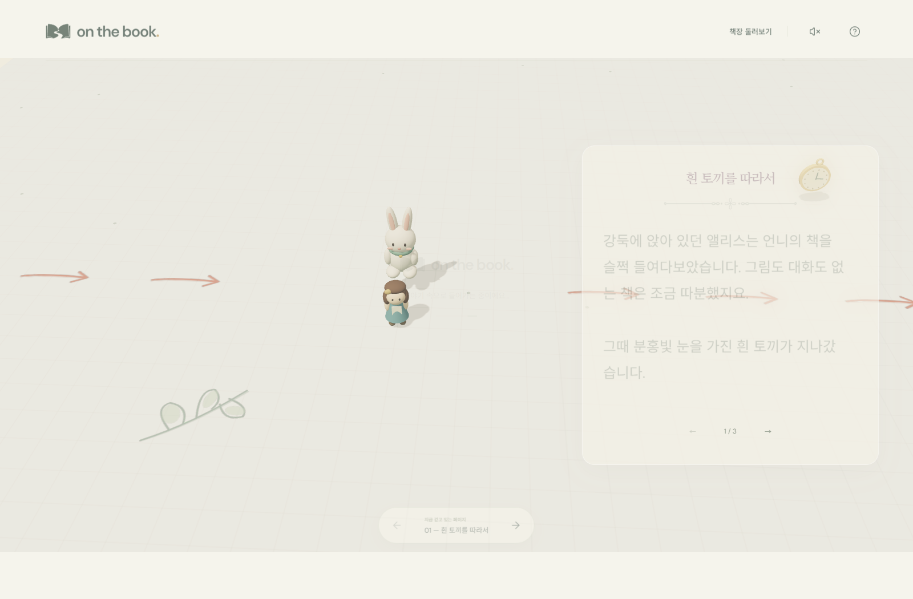
2389ms · http://127.0.0.1:4317/client/
통과R3 · client-recovery
손상된 방문 기록 복구 3
시나리오와 실행 증거
Given 브라우저 방문 기록이 올바른 형식이 아니다
When 사용자 화면을 열고 탐험을 시작한다
Then 화면이 멈추지 않고 첫 챕터를 탐험할 수 있다
걸킨 파일 · 실행 기록 · 원본 화면
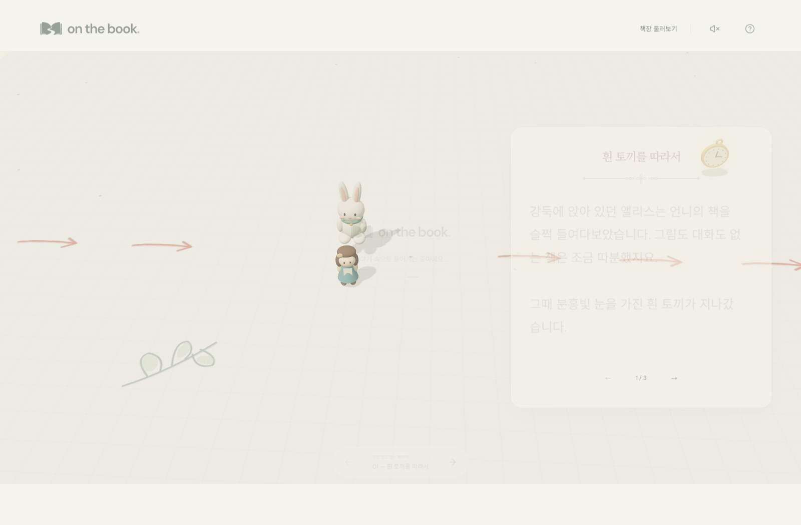
2464ms · http://127.0.0.1:4317/client/
통과R4 · client-recovery
손상된 방문 기록 복구 4
시나리오와 실행 증거
Given 브라우저 방문 기록이 올바른 형식이 아니다
When 사용자 화면을 열고 탐험을 시작한다
Then 화면이 멈추지 않고 첫 챕터를 탐험할 수 있다
걸킨 파일 · 실행 기록 · 원본 화면
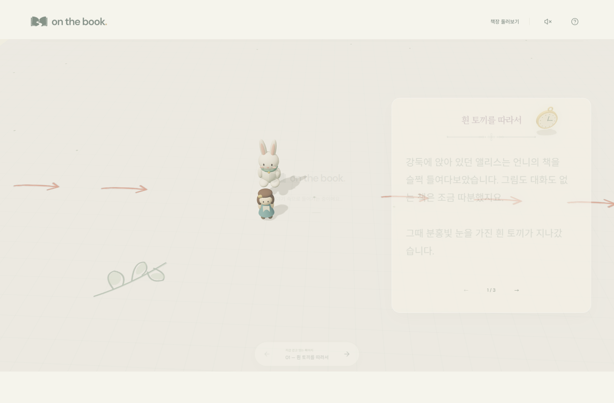
2384ms · http://127.0.0.1:4317/client/
통과R05 · client-recovery
책장 요청 실패 후 재시도
시나리오와 실행 증거
Given 책장 응답이 일시적으로 실패한다
When 오류 화면에서 다시 시도를 누른다
Then 오류 안내 후 정상 첫 화면으로 복구한다
걸킨 파일 · 실행 기록 · 원본 화면
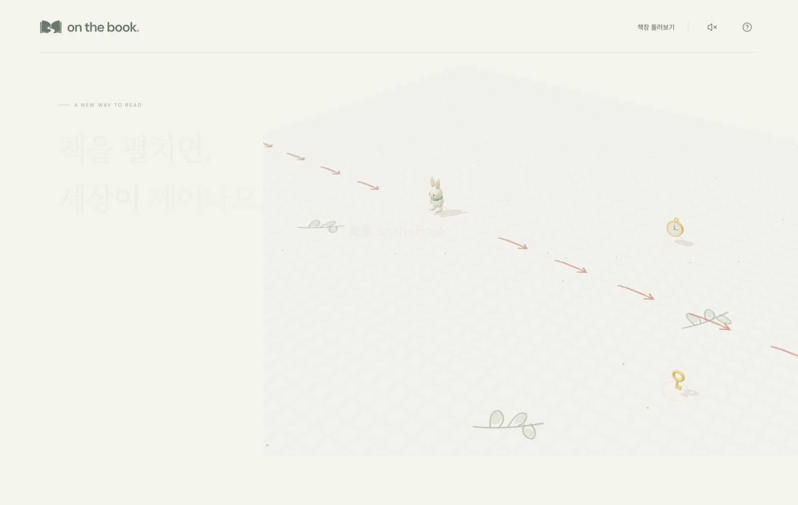
1219ms · http://127.0.0.1:4317/client/
통과R06 · client-recovery
공개 도서가 없는 책장
시나리오와 실행 증거
Given 공개 도서 목록이 비어 있다
When 사용자 화면에 접속한다
Then 새로운 이야기를 준비한다는 안내가 보인다
걸킨 파일 · 실행 기록 · 원본 화면
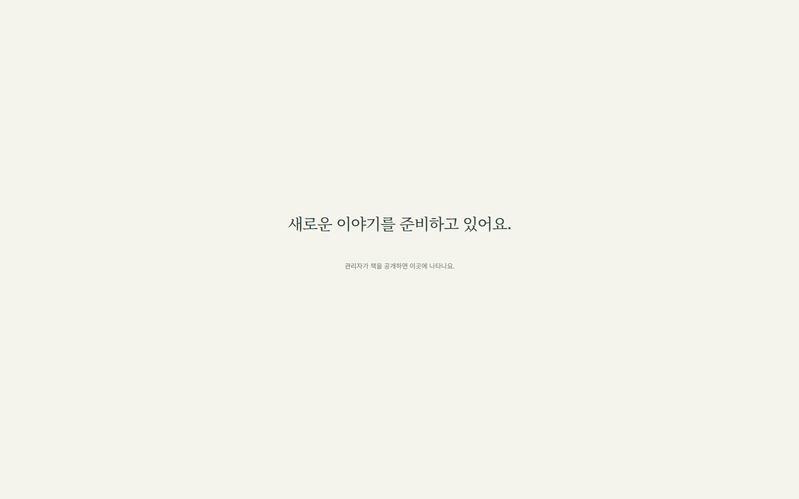
897ms · http://127.0.0.1:4317/client/
통과R07 · client-recovery
3D 미지원 브라우저의 본문 대안
시나리오와 실행 증거
Given 브라우저가 3D 그래픽을 지원하지 않는다
When 사용자 화면에서 이야기 읽기를 누른다
Then 3D 오류 안내와 함께 본문 및 원작 링크를 읽을 수 있다
걸킨 파일 · 실행 기록 · 원본 화면
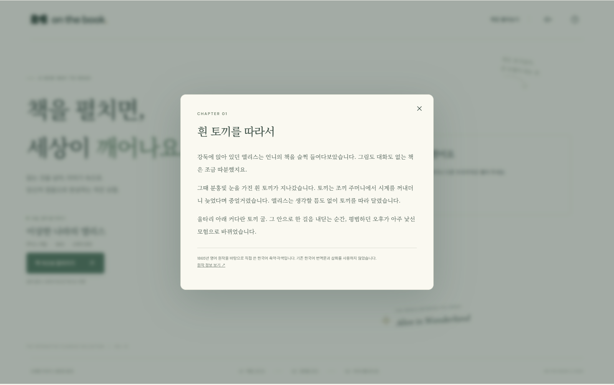
1493ms · http://127.0.0.1:4317/client/
통과R08 · client-recovery
저장 공간 쓰기 실패 안내
시나리오와 실행 증거
Given 브라우저가 방문 기록 저장을 거부한다
When 처음 탐험을 시작한다
Then 탐험을 유지하면서 저장 불가 안내를 표시한다
걸킨 파일 · 실행 기록 · 원본 화면
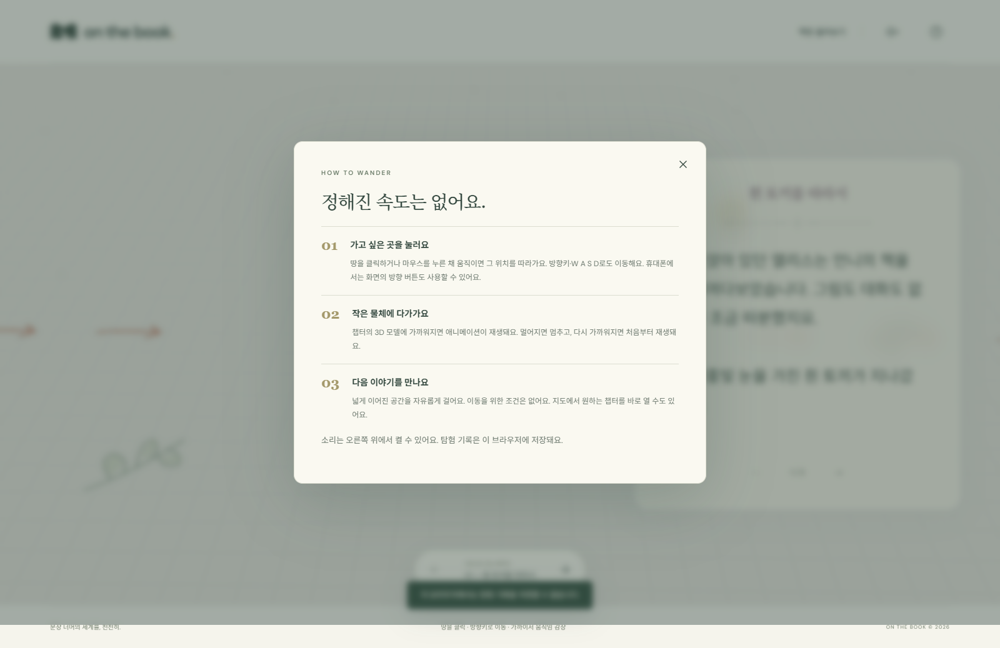
2891ms · http://127.0.0.1:4317/client/
통과R09 · client-recovery
응답이 느릴 때 중복 진입 방지
시나리오와 실행 증거
Given 책장 응답이 대기 중이다
When 사용자가 초기 로딩 상태를 확인한다
Then 로딩을 알리고 응답이 끝나면 시작 버튼이 표시된다
걸킨 파일 · 실행 기록 · 원본 화면
1295ms · http://127.0.0.1:4317/client/
통과A01 · admin-shelf
관리자 도서 보관함
시나리오와 실행 증거
Given 로컬 관리자 화면에 접속한다
When 도서 목록과 저장 및 공개 버튼을 확인한다
Then 기존 책 2권과 검색 및 상태 필터가 표시된다
걸킨 파일 · 실행 기록 · 원본 화면
871ms · http://127.0.0.1:4317/admin/
통과A02 · admin-shelf
도서 제목 검색
시나리오와 실행 증거
Given 도서가 여러 권 존재한다
When 앨리스를 검색한다
Then 앨리스만 표시된다
걸킨 파일 · 실행 기록 · 원본 화면
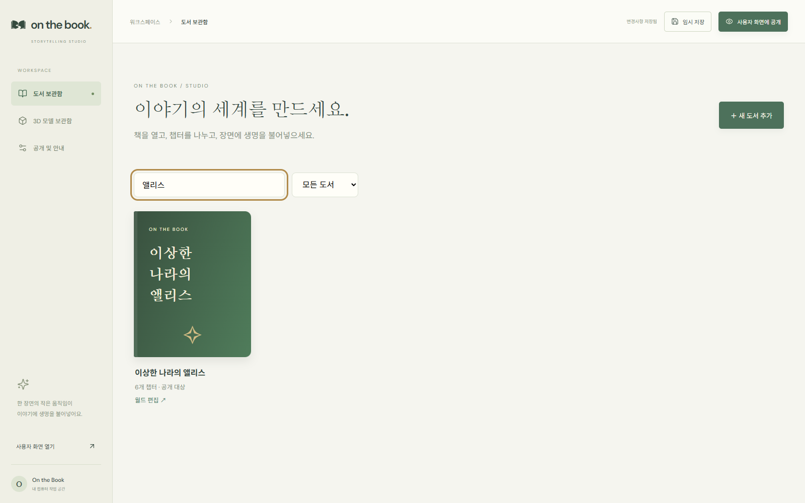
913ms · http://127.0.0.1:4317/admin/
통과A03 · admin-shelf
검색 결과 없음과 검색 해제
시나리오와 실행 증거
Given 관리자가 도서 목록에 있다
When 없는 제목을 검색한 뒤 검색어를 지운다
Then 빈 결과 안내 후 모든 도서가 다시 표시된다
걸킨 파일 · 실행 기록 · 원본 화면
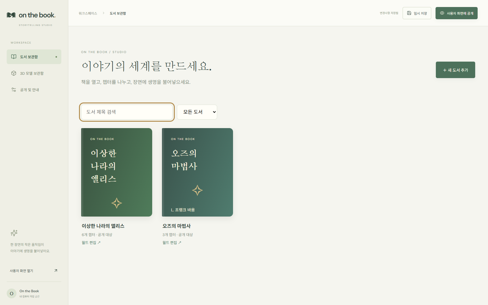
1164ms · http://127.0.0.1:4317/admin/
통과A04 · admin-shelf
공개 상태별 필터
시나리오와 실행 증거
Given 기존 책 두 권이 공개 대상이다
When 비공개 초안과 공개 대상을 차례로 고른다
Then 각 조건에 맞는 도서만 표시된다
걸킨 파일 · 실행 기록 · 원본 화면
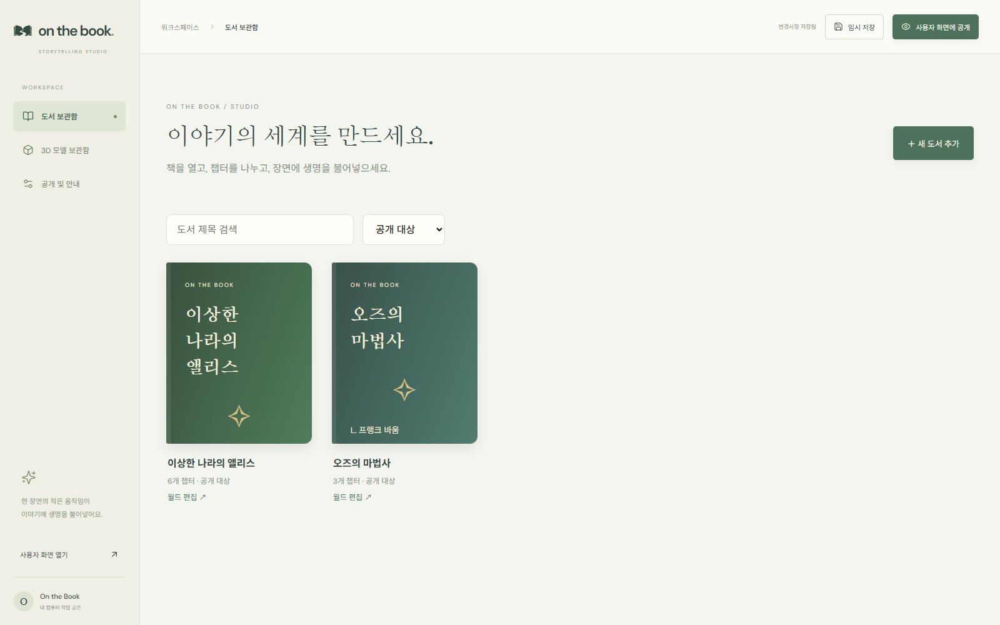
963ms · http://127.0.0.1:4317/admin/
통과A05 · admin-shelf
모델 보관함 검색
시나리오와 실행 증거
Given 기본 모델 9개가 존재한다
When 모델 보관함에서 토끼를 검색한다
Then 일치하는 모델만 표시된다
걸킨 파일 · 실행 기록 · 원본 화면
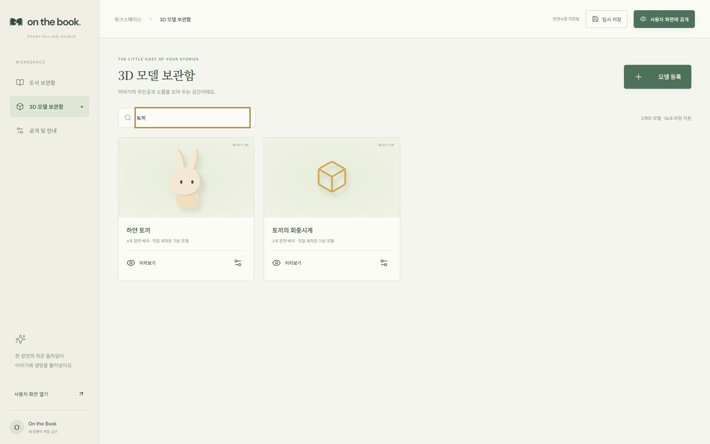
979ms · http://127.0.0.1:4317/admin/
통과A06 · admin-shelf
설정 파일 내려받기
시나리오와 실행 증거
Given 관리자에 책과 모델 데이터가 있다
When 공개 및 안내에서 설정 내려받기를 누른다
Then 설정 백업 파일이 내려받아진다
걸킨 파일 · 실행 기록 · 원본 화면
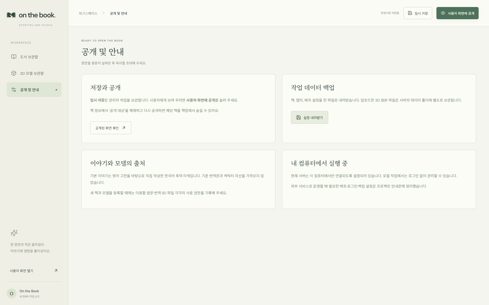
1099ms · http://127.0.0.1:4317/admin/
통과A07 · admin-shelf
사용자 화면 새 창 링크
시나리오와 실행 증거
Given 관리자 도서 보관함에 있다
When 사용자 화면 열기를 누른다
Then 새 창에서 사용자 화면이 정상 표시된다
걸킨 파일 · 실행 기록 · 원본 화면
1199ms · http://127.0.0.1:4317/admin/
통과A08 · admin-shelf
스튜디오 요청 실패와 재시도
시나리오와 실행 증거
Given 관리자 데이터 응답에 일시 장애가 있다
When 다시 시도를 누른다
Then 오류 안내 후 도서 보관함으로 복구한다
걸킨 파일 · 실행 기록 · 원본 화면

970ms · http://127.0.0.1:4317/admin/
통과V01 · book-validation
도서 입력 검증: 빈 제목
시나리오와 실행 증거
Given 새 책 정보 입력창이 열려 있다
When 빈 제목을 입력하고 책 만들기를 누른다
Then 입력창을 유지하고 잘못된 입력을 차단한다
걸킨 파일 · 실행 기록 · 원본 화면
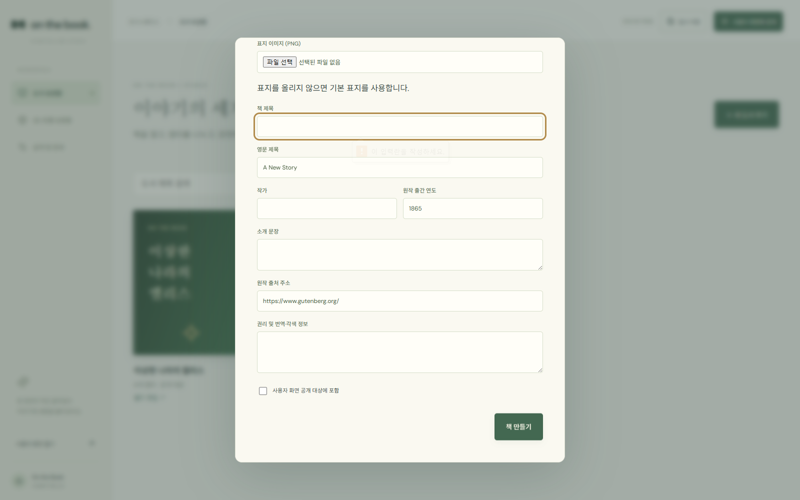
1016ms · http://127.0.0.1:4317/admin/
통과V02 · book-validation
도서 입력 검증: 빈 영문 제목
시나리오와 실행 증거
Given 새 책 정보 입력창이 열려 있다
When 빈 영문 제목을 입력하고 책 만들기를 누른다
Then 입력창을 유지하고 잘못된 입력을 차단한다
걸킨 파일 · 실행 기록 · 원본 화면
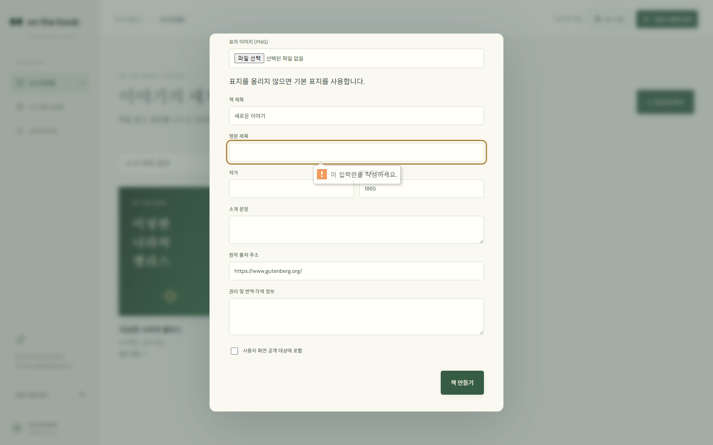
1115ms · http://127.0.0.1:4317/admin/
통과V03 · book-validation
도서 입력 검증: 출간 연도 하한 미만
시나리오와 실행 증거
Given 새 책 정보 입력창이 열려 있다
When 출간 연도 하한 미만을 입력하고 책 만들기를 누른다
Then 입력창을 유지하고 잘못된 입력을 차단한다
걸킨 파일 · 실행 기록 · 원본 화면
1182ms · http://127.0.0.1:4317/admin/
통과V04 · book-validation
도서 입력 검증: 출간 연도 상한 초과
시나리오와 실행 증거
Given 새 책 정보 입력창이 열려 있다
When 출간 연도 상한 초과을 입력하고 책 만들기를 누른다
Then 입력창을 유지하고 잘못된 입력을 차단한다
걸킨 파일 · 실행 기록 · 원본 화면
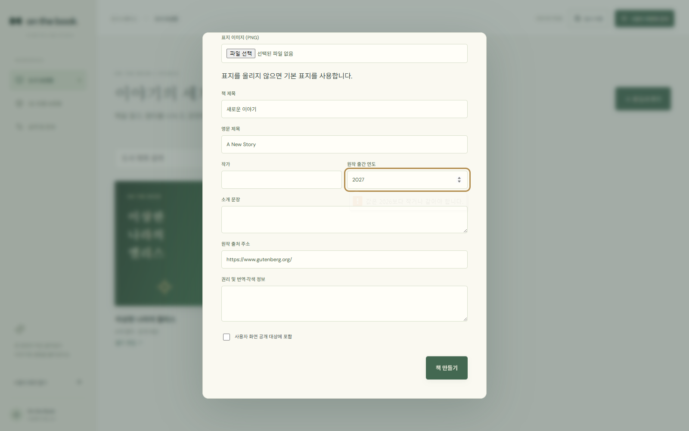
1164ms · http://127.0.0.1:4317/admin/
통과V05 · book-validation
도서 입력 검증: 정수가 아닌 연도
시나리오와 실행 증거
Given 새 책 정보 입력창이 열려 있다
When 정수가 아닌 연도을 입력하고 책 만들기를 누른다
Then 입력창을 유지하고 잘못된 입력을 차단한다
걸킨 파일 · 실행 기록 · 원본 화면
1413ms · http://127.0.0.1:4317/admin/
통과V06 · book-validation
도서 입력 검증: 잘못된 출처 주소
시나리오와 실행 증거
Given 새 책 정보 입력창이 열려 있다
When 잘못된 출처 주소을 입력하고 책 만들기를 누른다
Then 입력창을 유지하고 잘못된 입력을 차단한다
걸킨 파일 · 실행 기록 · 원본 화면
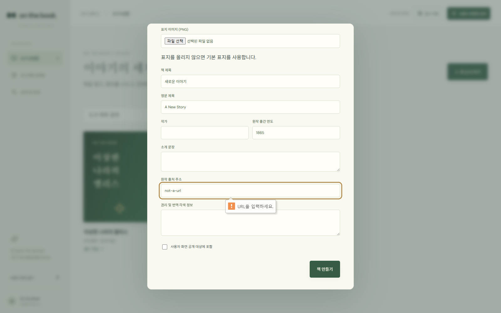
1207ms · http://127.0.0.1:4317/admin/
통과V07 · book-validation
도서 입력 검증: 실행 가능한 출처 주소
시나리오와 실행 증거
Given 새 책 정보 입력창이 열려 있다
When 실행 가능한 출처 주소을 입력하고 책 만들기를 누른다
Then 입력창을 유지하고 잘못된 입력을 차단한다
걸킨 파일 · 실행 기록 · 원본 화면
1362ms · http://127.0.0.1:4317/admin/
실패V08 · book-validation
공백으로만 된 제목 차단
보통 · 공백 제목의 도서가 만들어지고 저장 단계에서 영문 오류가 표시됨
이름이 없는 책의 편집 화면에 들어간 뒤 저장이 실패한다. 다른 미저장 작업과 함께 저장할 때 원인 파악이 어렵다.
시나리오와 실행 증거
Given 새 책 정보 입력창이 열려 있다
When 제목에 공백만 입력하고 책을 만든다
Then 책 생성 전에 의미 있는 제목을 요청한다
공백 제목 생성 허용 후 저장 400: Too small: expected string to have >=1 characters
걸킨 파일 · 실행 기록 · 원본 화면
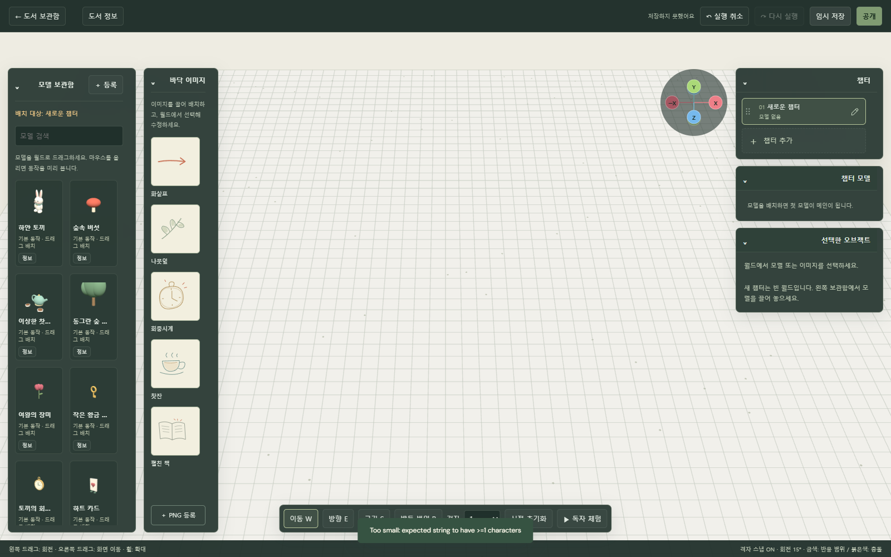
2070ms · http://127.0.0.1:4317/admin/
통과V09 · book-validation
문자열을 HTML로 실행하지 않음
시나리오와 실행 증거
Given 새 책 제목에 특수문자가 포함된다
When 태그와 한글 및 이모지가 있는 제목으로 책을 만든다
Then 문자열을 그대로 표시하고 스크립트를 실행하지 않는다
걸킨 파일 · 실행 기록 · 원본 화면
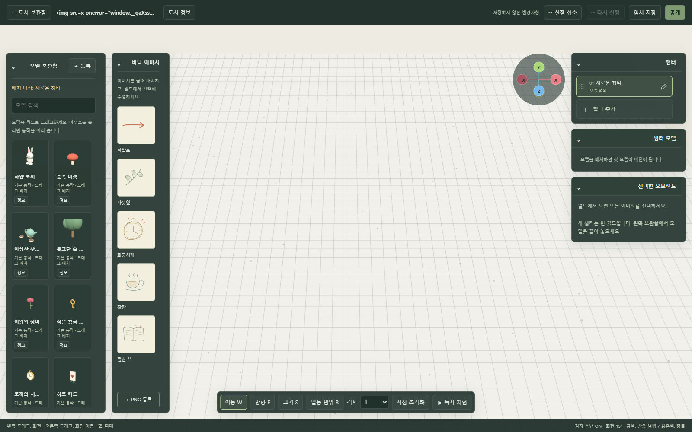
1332ms · http://127.0.0.1:4317/admin/
통과V10 · book-validation
새 비공개 책의 기본 챕터와 저장
시나리오와 실행 증거
Given 관리자가 새 책을 만들 수 있다
When 정상 제목으로 비공개 책을 만들고 임시 저장한다
Then 기본 챕터 1개와 비공개 상태로 저장되고 사용자 책장에는 없다
걸킨 파일 · 실행 기록 · 원본 화면
1524ms · http://127.0.0.1:4317/admin/
통과B01 · chapter-validation
챕터 입력 검증: 가로 하한 미만
시나리오와 실행 증거
Given 챕터 설정창이 열려 있다
When 가로 하한 미만 값을 입력하고 변경 적용을 누른다
Then 잘못된 입력을 차단하고 설정창을 유지한다
걸킨 파일 · 실행 기록 · 원본 화면
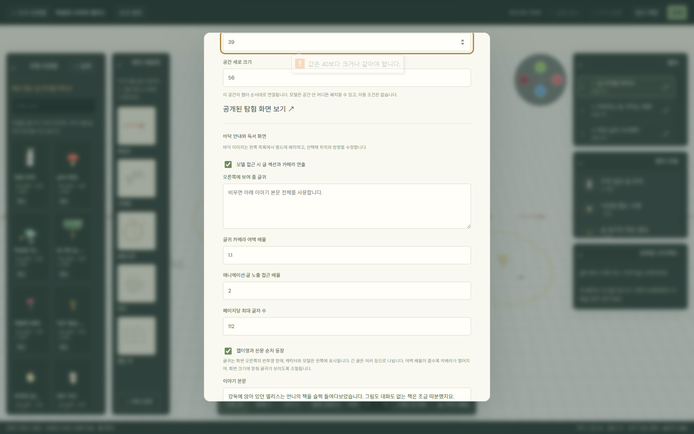
1847ms · http://127.0.0.1:4317/admin/
통과B02 · chapter-validation
챕터 입력 검증: 가로 상한 초과
시나리오와 실행 증거
Given 챕터 설정창이 열려 있다
When 가로 상한 초과 값을 입력하고 변경 적용을 누른다
Then 잘못된 입력을 차단하고 설정창을 유지한다
걸킨 파일 · 실행 기록 · 원본 화면
1657ms · http://127.0.0.1:4317/admin/
통과B03 · chapter-validation
챕터 입력 검증: 세로 하한 미만
시나리오와 실행 증거
Given 챕터 설정창이 열려 있다
When 세로 하한 미만 값을 입력하고 변경 적용을 누른다
Then 잘못된 입력을 차단하고 설정창을 유지한다
걸킨 파일 · 실행 기록 · 원본 화면
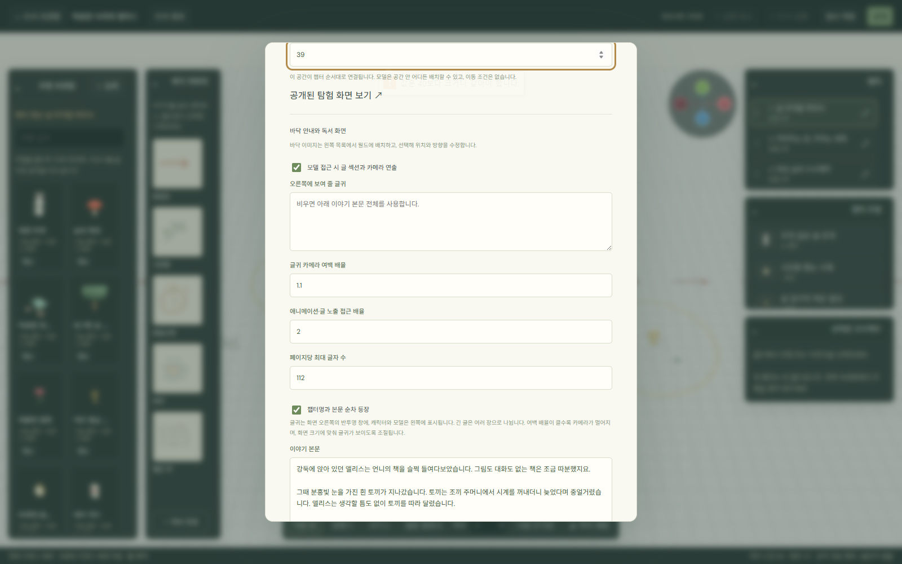
1637ms · http://127.0.0.1:4317/admin/
통과B04 · chapter-validation
챕터 입력 검증: 세로 상한 초과
시나리오와 실행 증거
Given 챕터 설정창이 열려 있다
When 세로 상한 초과 값을 입력하고 변경 적용을 누른다
Then 잘못된 입력을 차단하고 설정창을 유지한다
걸킨 파일 · 실행 기록 · 원본 화면
1468ms · http://127.0.0.1:4317/admin/
통과B05 · chapter-validation
챕터 입력 검증: 페이지 글자 수 하한 미만
시나리오와 실행 증거
Given 챕터 설정창이 열려 있다
When 페이지 글자 수 하한 미만 값을 입력하고 변경 적용을 누른다
Then 잘못된 입력을 차단하고 설정창을 유지한다
걸킨 파일 · 실행 기록 · 원본 화면
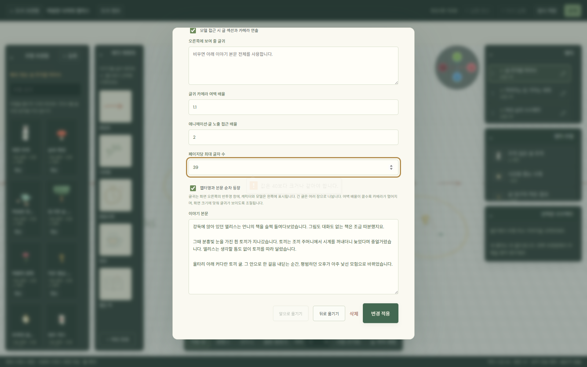
1724ms · http://127.0.0.1:4317/admin/
통과B06 · chapter-validation
챕터 입력 검증: 페이지 글자 수 상한 초과
시나리오와 실행 증거
Given 챕터 설정창이 열려 있다
When 페이지 글자 수 상한 초과 값을 입력하고 변경 적용을 누른다
Then 잘못된 입력을 차단하고 설정창을 유지한다
걸킨 파일 · 실행 기록 · 원본 화면
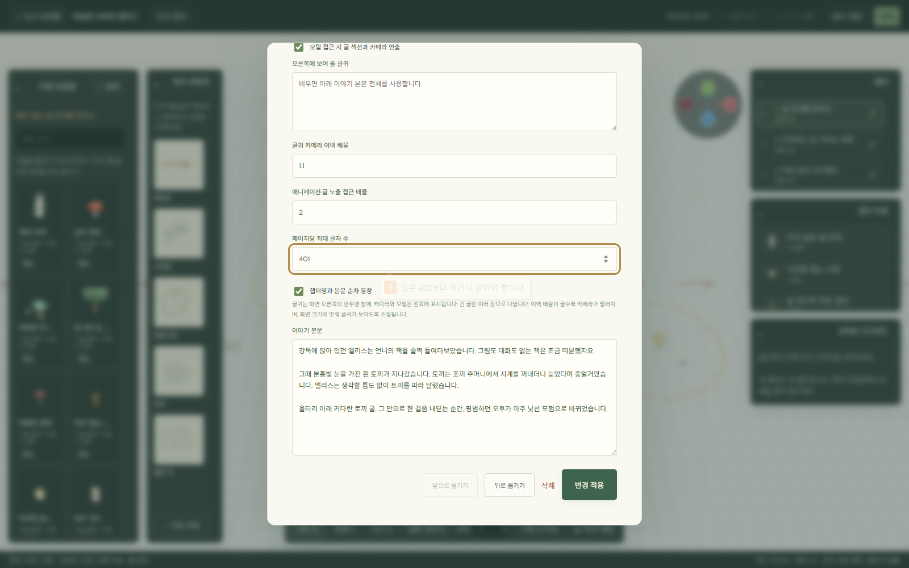
1640ms · http://127.0.0.1:4317/admin/
통과B07 · chapter-validation
챕터 입력 검증: 카메라 여백 상한 초과
시나리오와 실행 증거
Given 챕터 설정창이 열려 있다
When 카메라 여백 상한 초과 값을 입력하고 변경 적용을 누른다
Then 잘못된 입력을 차단하고 설정창을 유지한다
걸킨 파일 · 실행 기록 · 원본 화면
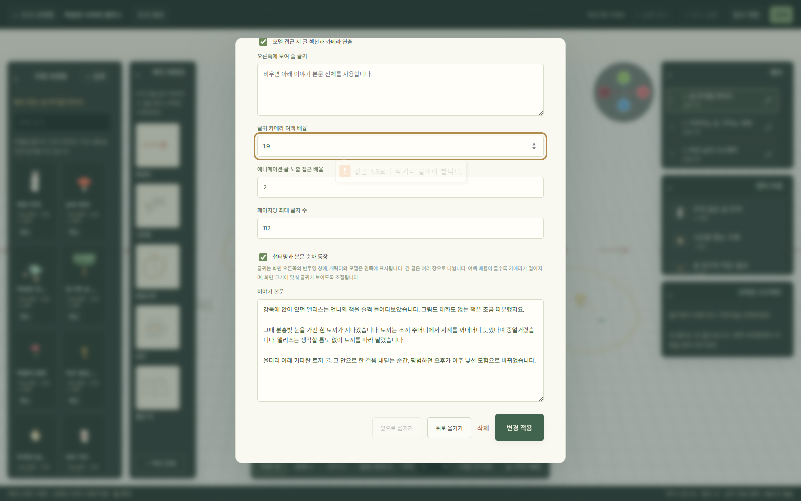
1777ms · http://127.0.0.1:4317/admin/
통과B08 · chapter-validation
챕터 입력 검증: 접근 배율 상한 초과
시나리오와 실행 증거
Given 챕터 설정창이 열려 있다
When 접근 배율 상한 초과 값을 입력하고 변경 적용을 누른다
Then 잘못된 입력을 차단하고 설정창을 유지한다
걸킨 파일 · 실행 기록 · 원본 화면
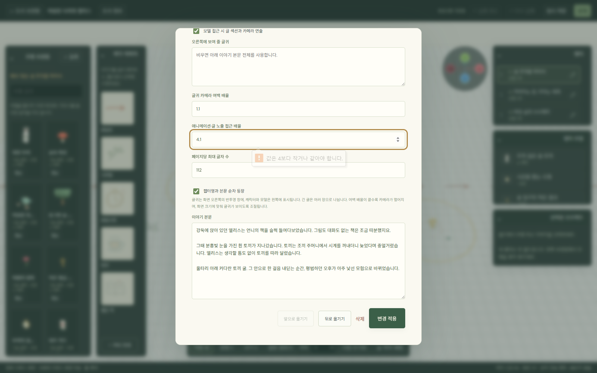
1593ms · http://127.0.0.1:4317/admin/
통과E01 · admin-edit
저장 전 편집 내용 유지
시나리오와 실행 증거
Given 앨리스의 도서 편집 화면이다
When 책 제목을 바꾸고 나가기에서 계속 편집을 누른다
Then 편집 화면과 바꾼 제목이 유지된다
걸킨 파일 · 실행 기록 · 원본 화면
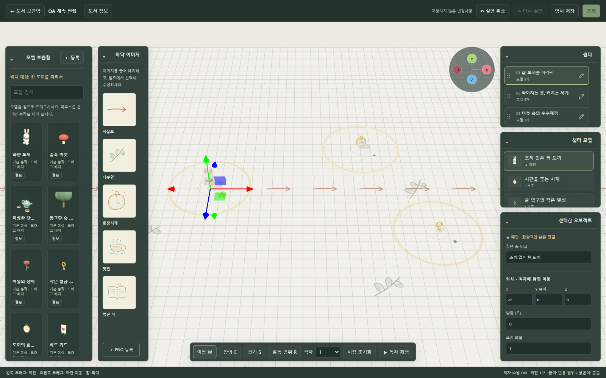
2149ms · http://127.0.0.1:4317/admin/
통과E02 · admin-edit
저장하지 않고 나가기
시나리오와 실행 증거
Given 책 제목을 변경했지만 저장하지 않았다
When 저장하지 않고 나가기를 선택한 뒤 책을 다시 연다
Then 기존 제목으로 되돌아온다
걸킨 파일 · 실행 기록 · 원본 화면
2593ms · http://127.0.0.1:4317/admin/
통과E03 · admin-edit
저장 후 나가기
시나리오와 실행 증거
Given 책 제목을 변경했지만 저장하지 않았다
When 저장 후 나가기를 선택하고 새로고침한다
Then 도서 목록에 변경한 제목이 남는다
걸킨 파일 · 실행 기록 · 원본 화면
2278ms · http://127.0.0.1:4317/admin/
통과E04 · admin-edit
실행 취소와 다시 실행
시나리오와 실행 증거
Given 도서 제목 변경을 적용했다
When 실행 취소 후 다시 실행한다
Then 원래 제목과 변경한 제목이 순서대로 복원된다
걸킨 파일 · 실행 기록 · 원본 화면
2244ms · http://127.0.0.1:4317/admin/
통과E05 · admin-edit
챕터 이동 중 같은 3D 화면 유지
시나리오와 실행 증거
Given 앨리스 편집 화면이 열려 있다
When 여러 챕터를 순서대로 선택한다
Then 선택한 챕터가 활성화되고 3D 화면이 재생성되지 않는다
걸킨 파일 · 실행 기록 · 원본 화면
2066ms · http://127.0.0.1:4317/admin/
통과E06 · admin-edit
챕터 이름과 본문 저장
시나리오와 실행 증거
Given 기존 첫 챕터를 편집한다
When 제목과 한글 및 이모지 본문을 바꾼 뒤 저장하고 다시 연다
Then 입력한 챕터 제목과 본문이 유지된다
걸킨 파일 · 실행 기록 · 원본 화면
2252ms · http://127.0.0.1:4317/admin/
통과E07 · admin-edit
챕터 순서 키보드 변경과 취소
시나리오와 실행 증거
Given 앨리스의 첫 챕터가 선택되어 있다
When 순서 손잡이에서 Alt+아래를 누르고 실행 취소한다
Then 챕터 순서가 바뀌고 취소하면 원래 순서가 된다
걸킨 파일 · 실행 기록 · 원본 화면
2015ms · http://127.0.0.1:4317/admin/
수용 기준 확인E08 · admin-edit
챕터 추가를 취소하면 원상 복귀
검토 · 챕터 추가창을 닫아도 빈 챕터가 남음
추가를 취소했다고 생각하면 빈 챕터가 의도치 않게 남을 수 있다. 즉시 생성 후 설정하는 방식이라면 안내와 취소 방식의 검토가 필요하다.
시나리오와 실행 증거
Given 기존 챕터 개수를 확인했다
When 챕터 추가를 누른 뒤 입력창을 닫는다
Then 추가 확정 전 취소한 챕터는 남지 않는다
추가 취소 시 챕터 개수: expected 6, actual 7
걸킨 파일 · 실행 기록 · 원본 화면
1931ms · http://127.0.0.1:4317/admin/
통과E09 · admin-edit
마지막 챕터 삭제 방지
시나리오와 실행 증거
Given 기본 챕터가 하나뿐인 새 책
When 챕터 설정을 연다
Then 유일한 챕터의 삭제 버튼이 비활성이다
걸킨 파일 · 실행 기록 · 원본 화면
1682ms · http://127.0.0.1:4317/admin/
통과E10 · admin-edit
도서 삭제 확인에서 취소
시나리오와 실행 증거
Given 기존 도서의 삭제를 요청한다
When 삭제 확인창에서 취소한다
Then 도서와 챕터가 유지된다
걸킨 파일 · 실행 기록 · 원본 화면

1540ms · http://127.0.0.1:4317/admin/
통과M01 · admin-models
모델 선택과 위치 속성
시나리오와 실행 증거
Given 모델이 있는 첫 챕터의 편집 화면
When 모델 목록의 첫 모델을 선택한다
Then 모델 이름과 실제 위치 및 애니메이션 설정을 확인할 수 있다
걸킨 파일 · 실행 기록 · 원본 화면
1191ms · http://127.0.0.1:4317/admin/
통과M02 · admin-models
모델 높이 변경 저장
시나리오와 실행 증거
Given 첫 챕터 모델을 선택했다
When 높이를 2로 바꾸고 임시 저장한다
Then 저장된 모델의 높이가 2이다
걸킨 파일 · 실행 기록 · 원본 화면
1478ms · http://127.0.0.1:4317/admin/
통과M03 · admin-models
메인 모델 변경
시나리오와 실행 증거
Given 첫 챕터에 여러 모델이 있다
When 보조 모델을 선택해 메인 모델로 지정하고 저장한다
Then 새 메인 모델이 목록과 저장 데이터에 반영된다
걸킨 파일 · 실행 기록 · 원본 화면
1454ms · http://127.0.0.1:4317/admin/
통과M04 · admin-models
메인 모델 삭제 시 대체 모델 필수
시나리오와 실행 증거
Given 메인 모델과 보조 모델들이 있다
When 메인 모델 삭제를 누르고 대체 모델 없이 확정한다
Then 대체 모델 선택창을 유지한다
걸킨 파일 · 실행 기록 · 원본 화면
2142ms · http://127.0.0.1:4317/admin/
통과M05 · admin-models
모델 복제
시나리오와 실행 증거
Given 첫 챕터의 모델이 선택되어 있다
When 복제를 누른다
Then 겹치지 않는 위치에 고유 식별자를 가진 모델이 하나 추가된다
걸킨 파일 · 실행 기록 · 원본 화면
1699ms · http://127.0.0.1:4317/admin/
통과M06 · admin-models
첫 모델을 드래그해 배치
시나리오와 실행 증거
Given 모델이 없는 새 책의 챕터
When 기본 토끼 모델을 월드로 끌어 놓는다
Then 모델이 추가되며 자동으로 메인 모델이 된다
걸킨 파일 · 실행 기록 · 원본 화면
1915ms · http://127.0.0.1:4317/admin/
통과M07 · admin-models
편집 도구 단축키와 Escape
시나리오와 실행 증거
Given 모델을 선택한 편집 화면
When E, S, R, Escape를 차례로 누른다
Then 방향, 크기, 범위, 이동 도구가 각각 활성화된다
걸킨 파일 · 실행 기록 · 원본 화면
1304ms · http://127.0.0.1:4317/admin/
통과M08 · admin-models
관리자 독자 체험과 편집 복귀
시나리오와 실행 증거
Given 편집 중인 챕터가 있다
When 독자 체험에서 다른 챕터를 보고 편집으로 돌아온다
Then 본문과 장면을 체험하고 원래 편집 화면으로 돌아온다
걸킨 파일 · 실행 기록 · 원본 화면
1807ms · http://127.0.0.1:4317/admin/
통과U01 · uploads
손상된 GLB 거부
시나리오와 실행 증거
Given 새 모델 등록창이 열려 있다
When invalid.glb 파일을 선택한다
Then 등록 실패 이유를 알리고 저장 버튼을 다시 사용할 수 있다
걸킨 파일 · 실행 기록 · 원본 화면
1308ms · http://127.0.0.1:4317/admin/
통과U02 · uploads
뼈대 없는 GLB 거부
시나리오와 실행 증거
Given 새 모델 등록창이 열려 있다
When unrigged.glb 파일을 선택한다
Then 등록 실패 이유를 알리고 저장 버튼을 다시 사용할 수 있다
걸킨 파일 · 실행 기록 · 원본 화면
1423ms · http://127.0.0.1:4317/admin/
통과U03 · uploads
25MB 초과 GLB 거부
시나리오와 실행 증거
Given 새 모델 등록창이 열려 있다
When oversize.glb 파일을 선택한다
Then 등록 실패 이유를 알리고 저장 버튼을 다시 사용할 수 있다
걸킨 파일 · 실행 기록 · 원본 화면
1334ms · http://127.0.0.1:4317/admin/
통과U04 · uploads
정상 애니메이션 모델 등록과 저장
시나리오와 실행 증거
Given 유효한 애니메이션 GLB 파일이 준비되어 있다
When 이름과 사용 권한 및 파일을 입력하고 보관함에 등록한 뒤 저장한다
Then 모델과 애니메이션 정보가 보관함에 저장된다
걸킨 파일 · 실행 기록 · 원본 화면
1453ms · http://127.0.0.1:4317/admin/
통과U05 · uploads
파일 없이 모델 등록 차단
시나리오와 실행 증거
Given 이름과 사용 권한만 입력된 새 모델
When 파일을 선택하지 않고 보관함 등록을 누른다
Then 유효한 파일을 먼저 등록하도록 안내한다
걸킨 파일 · 실행 기록 · 원본 화면
1241ms · http://127.0.0.1:4317/admin/
통과U06 · uploads
사용 중인 모델 삭제 차단
시나리오와 실행 증거
Given 토끼 모델이 여러 챕터에 배치되어 있다
When 모델 정보에서 삭제를 누른다
Then 장면에서 먼저 제거하도록 안내하고 모델을 유지한다
걸킨 파일 · 실행 기록 · 원본 화면
1730ms · http://127.0.0.1:4317/admin/
통과U07 · uploads
잘못된 표지 이미지 거부: invalid.png
시나리오와 실행 증거
Given 도서 정보창이 열려 있다
When invalid.png을 표지로 선택한다
Then 파일 오류를 안내하고 변경 적용 버튼을 다시 사용할 수 있다
걸킨 파일 · 실행 기록 · 원본 화면
1359ms · http://127.0.0.1:4317/admin/
통과U08 · uploads
잘못된 표지 이미지 거부: oversize.png
시나리오와 실행 증거
Given 도서 정보창이 열려 있다
When oversize.png을 표지로 선택한다
Then 파일 오류를 안내하고 변경 적용 버튼을 다시 사용할 수 있다
걸킨 파일 · 실행 기록 · 원본 화면
1402ms · http://127.0.0.1:4317/admin/
통과U09 · uploads
표지 이미지 등록과 사용자 반영
시나리오와 실행 증거
Given 유효한 PNG 파일과 공개 도서가 있다
When 표지를 올려 적용하고 공개한다
Then 사용자 책장에 등록한 표지가 로드된다
걸킨 파일 · 실행 기록 · 원본 화면
3244ms · http://127.0.0.1:4317/client/
통과U10 · uploads
바닥 이미지 등록과 저장
시나리오와 실행 증거
Given 도서 편집 화면이 열려 있다
When PNG 바닥 이미지를 등록하고 저장한 뒤 다시 연다
Then 등록 이미지가 바닥 이미지 목록에 남는다
걸킨 파일 · 실행 기록 · 원본 화면
2151ms · http://127.0.0.1:4317/admin/
통과I01 · integration
임시 저장과 공개 분리
시나리오와 실행 증거
Given 공개된 앨리스 도서가 있다
When 관리자에서 제목을 바꾸고 임시 저장만 한다
Then 관리자는 변경 제목을 보며 사용자 화면은 기존 제목을 표시한다
걸킨 파일 · 실행 기록 · 원본 화면
2670ms · http://127.0.0.1:4317/admin/
통과I02 · integration
관리자 편집에서 공개와 사용자 확인까지
시나리오와 실행 증거
Given 관리자가 공개 도서를 편집한다
When 제목을 변경해 공개하고 사용자 화면을 새로 연다
Then 변경한 책 제목이 사용자 첫 화면과 책장에 표시된다
걸킨 파일 · 실행 기록 · 원본 화면
3575ms · http://127.0.0.1:4317/client/
통과I03 · integration
비공개 전환 후 책장 제외
시나리오와 실행 증거
Given 공개 중인 앨리스가 있다
When 공개 대상 체크를 해제하고 공개한다
Then 사용자 책장에서 앨리스가 사라지고 오즈는 남는다
걸킨 파일 · 실행 기록 · 원본 화면
3557ms · http://127.0.0.1:4317/client/
통과I04 · integration
저자 및 권리 정보 없는 공개 차단
시나리오와 실행 증거
Given 공개 대상 도서의 저자와 권리 정보가 비어 있다
When 공개를 누른다
Then 누락 정보 안내가 나오며 공개 데이터는 그대로 유지된다
걸킨 파일 · 실행 기록 · 원본 화면
1814ms · http://127.0.0.1:4317/admin/
통과I05 · integration
메인 모델 없는 챕터 공개 차단
시나리오와 실행 증거
Given 새 공개 대상 책에 모델이 없다
When 임시 저장 후 공개를 누른다
Then 초안 저장은 되고 공개는 메인 모델 안내와 함께 거부된다
걸킨 파일 · 실행 기록 · 원본 화면
1712ms · http://127.0.0.1:4317/admin/
통과I06 · integration
저장 오류 후 수정 내용 유지와 재시도
시나리오와 실행 증거
Given 책 제목을 수정한 상태에서 저장 요청이 실패한다
When 실패 안내를 확인한 뒤 다시 저장한다
Then 편집 내용이 보존되고 두 번째 저장이 성공한다
걸킨 파일 · 실행 기록 · 원본 화면
1731ms · http://127.0.0.1:4317/admin/
통과I07 · integration
다른 창의 저장과 충돌 처리
시나리오와 실행 증거
Given 두 관리자 창이 같은 도서를 열었다
When 첫 창에서 저장한 뒤 오래된 둘째 창이 저장한다
Then 둘째 창은 덮어쓰지 않고 충돌을 알린다
걸킨 파일 · 실행 기록 · 원본 화면
3852ms · http://127.0.0.1:4317/admin/
통과I08 · integration
저장 중 버튼 중복 요청 방지
시나리오와 실행 증거
Given 변경 내용을 저장하는 응답이 대기 중이다
When 저장 중 저장 및 공개 버튼을 확인한다
Then 두 버튼을 비활성화하고 완료 후 활성화한다
걸킨 파일 · 실행 기록 · 원본 화면
1684ms · http://127.0.0.1:4317/admin/
통과S01 · auth-basic
비로그인 관리자 접근 보호
시나리오와 실행 증거
Given 비밀번호 보호가 켜진 별도 환경
When 관리자 화면에 접속한다
Then 로그인 화면이 표시되고 도서 편집 화면은 보이지 않는다
걸킨 파일 · 실행 기록 · 원본 화면

823ms · http://127.0.0.1:4318/admin/
통과S02 · auth-basic
빈 비밀번호 차단
시나리오와 실행 증거
Given 관리자 로그인 화면
When 비밀번호 없이 입장을 누른다
Then 필수 입력을 요구하고 로그인 화면을 유지한다
걸킨 파일 · 실행 기록 · 원본 화면
801ms · http://127.0.0.1:4318/admin/
통과S03 · auth-basic
잘못된 비밀번호 안내
시나리오와 실행 증거
Given 관리자 로그인 화면
When 틀린 비밀번호를 제출한다
Then 비밀번호가 일치하지 않는다는 안내가 표시된다
걸킨 파일 · 실행 기록 · 원본 화면
847ms · http://127.0.0.1:4318/admin/
통과S04 · auth-basic
올바른 로그인과 새로고침 유지
시나리오와 실행 증거
Given 올바른 테스트 비밀번호가 있다
When 로그인한 뒤 새로고침한다
Then 로그인 상태와 관리자 보관함이 유지된다
걸킨 파일 · 실행 기록 · 원본 화면
1141ms · http://127.0.0.1:4318/admin/
통과S05 · auth-basic
로그아웃 후 관리자 접근 차단
시나리오와 실행 증거
Given 로그인한 관리자
When 로그아웃을 누르고 관리자 화면을 다시 연다
Then 로그인 화면으로 돌아간다
걸킨 파일 · 실행 기록 · 원본 화면
1296ms · http://127.0.0.1:4318/admin/
통과S06 · auth-basic
인증 없는 초안 미리보기 차단
시나리오와 실행 증거
Given 로그인하지 않은 사용자
When 초안 미리보기 주소에 접속한다
Then 초안 내용 대신 관리자 로그인 필요 안내를 표시한다
걸킨 파일 · 실행 기록 · 원본 화면
955ms · http://127.0.0.1:4318/client/?preview=draft&book=alice&chapter=alice-1
통과S07 · auth-basic
인증 없이 공개 독서 가능
시나리오와 실행 증거
Given 비밀번호 보호가 켜진 환경의 일반 사용자
When 사용자 첫 화면에 접속한다
Then 로그인 요구 없이 공개 도서를 볼 수 있다
걸킨 파일 · 실행 기록 · 원본 화면
1121ms · http://127.0.0.1:4318/client/
통과S08 · auth-basic
세션 종료 후 편집 저장 거부
시나리오와 실행 증거
Given 로그인 후 제목을 편집했다
When 세션을 지우고 저장을 누른다
Then 로그인 필요 안내를 표시하며 편집 내용은 유지한다
걸킨 파일 · 실행 기록 · 원본 화면
1871ms · http://127.0.0.1:4318/admin/
통과PC390 · responsive
client 화면 크기 390×844
시나리오와 실행 증거
Given 390×844 화면의 사용자
When client 첫 화면과 주요 동작을 확인한다
Then 가로 넘침 없이 주요 버튼을 실제로 누를 수 있다
걸킨 파일 · 실행 기록 · 원본 화면
2329ms · http://127.0.0.1:4317/client/
통과PA390 · responsive
admin 화면 크기 390×844
시나리오와 실행 증거
Given 390×844 화면의 사용자
When admin 첫 화면과 주요 동작을 확인한다
Then 가로 넘침 없이 주요 버튼을 실제로 누를 수 있다
걸킨 파일 · 실행 기록 · 원본 화면
1047ms · http://127.0.0.1:4317/admin/
통과PC768 · responsive
client 화면 크기 768×1024
시나리오와 실행 증거
Given 768×1024 화면의 사용자
When client 첫 화면과 주요 동작을 확인한다
Then 가로 넘침 없이 주요 버튼을 실제로 누를 수 있다
걸킨 파일 · 실행 기록 · 원본 화면
2402ms · http://127.0.0.1:4317/client/
통과PA768 · responsive
admin 화면 크기 768×1024
시나리오와 실행 증거
Given 768×1024 화면의 사용자
When admin 첫 화면과 주요 동작을 확인한다
Then 가로 넘침 없이 주요 버튼을 실제로 누를 수 있다
걸킨 파일 · 실행 기록 · 원본 화면
1047ms · http://127.0.0.1:4317/admin/
통과PC1024 · responsive
client 화면 크기 1024×768
시나리오와 실행 증거
Given 1024×768 화면의 사용자
When client 첫 화면과 주요 동작을 확인한다
Then 가로 넘침 없이 주요 버튼을 실제로 누를 수 있다
걸킨 파일 · 실행 기록 · 원본 화면
2503ms · http://127.0.0.1:4317/client/
통과PA1024 · responsive
admin 화면 크기 1024×768
시나리오와 실행 증거
Given 1024×768 화면의 사용자
When admin 첫 화면과 주요 동작을 확인한다
Then 가로 넘침 없이 주요 버튼을 실제로 누를 수 있다
걸킨 파일 · 실행 기록 · 원본 화면
985ms · http://127.0.0.1:4317/admin/
통과PC1600 · responsive
client 화면 크기 1600×1000
시나리오와 실행 증거
Given 1600×1000 화면의 사용자
When client 첫 화면과 주요 동작을 확인한다
Then 가로 넘침 없이 주요 버튼을 실제로 누를 수 있다
걸킨 파일 · 실행 기록 · 원본 화면
2453ms · http://127.0.0.1:4317/client/
통과PA1600 · responsive
admin 화면 크기 1600×1000
시나리오와 실행 증거
Given 1600×1000 화면의 사용자
When admin 첫 화면과 주요 동작을 확인한다
Then 가로 넘침 없이 주요 버튼을 실제로 누를 수 있다
걸킨 파일 · 실행 기록 · 원본 화면
945ms · http://127.0.0.1:4317/admin/
통과P09 · responsive
작은 화면의 편집 주요 도구 접근
시나리오와 실행 증거
Given 390×844 화면의 관리자
When 책을 열어 저장 및 공개와 도구 영역을 확인한다
Then 주요 편집 버튼이 화면 안에 있고 서로 겹쳐 가려지지 않는다
걸킨 파일 · 실행 기록 · 원본 화면

1069ms · http://127.0.0.1:4317/admin/
통과P10 · responsive
동작 줄이기 설정에서 화면 이동
시나리오와 실행 증거
Given 운영체제의 동작 줄이기를 선택했다
When 사용자 화면에서 다음 챕터로 이동한다
Then 화면이 멈추지 않고 다음 챕터를 표시한다
걸킨 파일 · 실행 기록 · 원본 화면
1232ms · http://127.0.0.1:4317/client/?book=alice&chapter=alice-2
통과X01 · accessibility
사용자 버튼의 이름 제공
시나리오와 실행 증거
Given 사용자 탐험 화면이 열려 있다
When 보조 기술이 버튼을 읽을 수 있는지 확인한다
Then 보이는 모든 버튼에 읽을 수 있는 이름이 있다
걸킨 파일 · 실행 기록 · 원본 화면
1145ms · http://127.0.0.1:4317/client/?book=alice&chapter=alice-1
통과X02 · accessibility
도서 정보창 키보드 초점 제한
시나리오와 실행 증거
Given 도서 정보창이 열려 있다
When Tab 키로 여러 번 이동한다
Then 입력창 뒤의 편집 요소로 초점이 이동하지 않는다
걸킨 파일 · 실행 기록 · 원본 화면
1828ms · http://127.0.0.1:4317/admin/
통과X03 · accessibility
키보드로 첫 화면의 탐험 시작
시나리오와 실행 증거
Given 마우스를 사용하지 않는 사용자
When 시작 버튼에 초점을 두고 Enter를 누른다
Then 탐험 화면과 사용 안내가 열린다
걸킨 파일 · 실행 기록 · 원본 화면
2789ms · http://127.0.0.1:4317/client/
통과X04 · accessibility
모델 검색의 빈 결과 안내
시나리오와 실행 증거
Given 관리자 모델 보관함
When 존재하지 않는 모델 이름을 검색한다
Then 검색 결과가 없음을 읽을 수 있는 문장으로 알린다
걸킨 파일 · 실행 기록 · 원본 화면
1045ms · http://127.0.0.1:4317/admin/
통과J01 · uat-extended
새 책과 새 GLB 모델의 공개 독서 전체 과정
시나리오와 실행 증거
Given 관리자가 새 공개 도서를 준비한다
When 새 책을 만들고 GLB를 등록 및 배치한 뒤 본문을 작성해 공개한다
Then 사용자 책장에서 새 책을 골라 모델과 본문을 볼 수 있다
걸킨 파일 · 실행 기록 · 원본 화면
6944ms · http://127.0.0.1:4317/client/?book=460635e9-cd98-4868-86ae-a17104dc9fa4
실패J02 · uat-extended
저장 도중 추가 수정의 미저장 상태 표시
높음 · 저장 중 추가한 수정 사항까지 저장된 것처럼 표시됨
실제로 저장되지 않은 최신 편집 내용을 사용자가 저장 완료로 오인할 수 있다. 나가기 경고는 별도로 작동하므로 데이터 유실을 확정한 것은 아니다.
시나리오와 실행 증거
Given 책 제목의 첫 변경을 저장 중이다
When 응답이 오기 전에 제목을 다시 변경한다
Then 첫 변경만 저장되고 두 번째 변경은 미저장으로 표시한다
표시 누락: 저장하지 않은
걸킨 파일 · 실행 기록 · 원본 화면
4696ms · http://127.0.0.1:4317/admin/
통과J03 · uat-extended
나가기 중 저장 실패와 재시도
시나리오와 실행 증거
Given 저장되지 않은 도서 제목 변경이 있다
When 저장 후 나가기의 첫 요청을 실패시키고 다시 시도한다
Then 나가기 창과 변경 내용을 보존하고 재시도 성공 후 나간다
걸킨 파일 · 실행 기록 · 원본 화면
2897ms · http://127.0.0.1:4317/admin/
통과J04 · uat-extended
모든 도서를 비공개로 전환
시나리오와 실행 증거
Given 공개 도서 2권이 있다
When 각 책의 공개 대상을 해제하고 공개한다
Then 사용자 화면에 준비 중 안내를 표시한다
걸킨 파일 · 실행 기록 · 원본 화면

3139ms · http://127.0.0.1:4317/client/
통과J05 · uat-extended
바닥 그림 드래그와 크기 저장
시나리오와 실행 증거
Given 도서 편집 화면에 기본 바닥 이미지가 있다
When 화살표 그림을 장면에 놓고 크기를 바꾼 뒤 저장한다
Then 바닥 그림의 위치와 크기가 저장된다
걸킨 파일 · 실행 기록 · 원본 화면
1923ms · http://127.0.0.1:4317/admin/
통과J06 · uat-extended
등록한 미사용 모델 삭제
시나리오와 실행 증거
Given 새 GLB 모델을 보관함에 등록했다
When 아직 배치하지 않은 모델을 삭제하고 저장한다
Then 보관함에서 모델이 사라진다
걸킨 파일 · 실행 기록 · 원본 화면
2145ms · http://127.0.0.1:4317/admin/
통과J07 · uat-extended
메인 모델 대체 삭제 저장
시나리오와 실행 증거
Given 메인과 보조 모델이 있는 챕터
When 메인 삭제 시 보조 모델을 대체로 선택한다
Then 기존 메인은 제거되고 선택한 보조 모델이 메인이 된다
걸킨 파일 · 실행 기록 · 원본 화면
2170ms · http://127.0.0.1:4317/admin/
통과J08 · uat-extended
본문 표시 해제와 사용자 반영
시나리오와 실행 증거
Given 첫 챕터에서 모델 접근 시 본문을 표시한다
When 본문과 카메라 연출 옵션을 해제한 뒤 공개한다
Then 해당 챕터에서 본문 창 없이 탐험할 수 있다
걸킨 파일 · 실행 기록 · 원본 화면
2842ms · http://127.0.0.1:4317/client/?book=alice&chapter=alice-1
통과Z01 · edge-cases
겹치는 모델 반응 범위 저장 방지
시나리오와 실행 증거
Given 모델이 여러 개 있는 챕터
When 첫 모델의 반응 범위를 최대치로 늘린다
Then 겹침을 안내하고 기존 범위를 유지한다
걸킨 파일 · 실행 기록 · 원본 화면
1391ms · http://127.0.0.1:4317/admin/
통과Z02 · edge-cases
공간 축소 시 외부 모델 검사
시나리오와 실행 증거
Given 모델을 현재 챕터 안쪽의 X=26 위치로 옮겼다
When 가로와 세로 크기를 최소값으로 줄인다
Then 외부로 벗어나는 배치를 알리고 변경 적용을 막는다
걸킨 파일 · 실행 기록 · 원본 화면
3305ms · http://127.0.0.1:4317/admin/
실패Z03 · edge-cases
기본 제공 모델의 정보 수정
보통 · 기본 제공 모델의 이름과 정보를 수정할 수 없음
기본 토끼·나무 같은 모델에서 편집 기능을 열 수 있지만 정보 변경을 적용하지 못한다.
시나리오와 실행 증거
Given 기본 토끼 모델의 편집 버튼이 있다
When 모델 이름을 수정하고 적용한다
Then 모델 종류를 보존하면서 이름이 변경된다
기본 모델 편집이 파일 등록 요구로 차단됨
걸킨 파일 · 실행 기록 · 원본 화면
1911ms · http://127.0.0.1:4317/admin/
통과Z04 · edge-cases
모바일 방향 버튼으로 이동
시나리오와 실행 증거
Given 390×844에서 첫 챕터 본문을 보고 있다
When 뒤로 이동 버튼을 누른 채 유지한다
Then 캐릭터가 이동해 본문 표시 영역에서 벗어난다
걸킨 파일 · 실행 기록 · 원본 화면
2274ms · http://127.0.0.1:4317/client/?book=alice&chapter=alice-1
통과Z05 · edge-cases
탐험 중 새로고침으로 챕터 유지
시나리오와 실행 증거
Given 지도에서 다섯째 챕터로 이동했다
When 브라우저를 새로고침한다
Then 다섯째 챕터와 본문을 그대로 표시한다
걸킨 파일 · 실행 기록 · 원본 화면
2378ms · http://127.0.0.1:4317/client/?book=alice&chapter=alice-5
통과Z06 · edge-cases
영문 검색의 대소문자 무시
시나리오와 실행 증거
Given 영문 제목으로 새 도서를 저장했다
When 소문자로 도서 제목을 검색한다
Then 대문자가 포함된 같은 도서를 찾는다
걸킨 파일 · 실행 기록 · 원본 화면
1413ms · http://127.0.0.1:4317/admin/
통과Z07 · movement-layout
모바일 편집 장면의 조작 공간
시나리오와 실행 증거
Given 390×844 화면에서 도서를 편집한다
When 화면 중앙의 장면을 직접 조작할 수 있는지 확인한다
Then 편집 패널이 중앙의 3D 장면을 전부 가리지 않는다
걸킨 파일 · 실행 기록 · 원본 화면
1891ms · http://127.0.0.1:4317/admin/
통과Z08 · movement-layout
걸어서 다음 챕터로 자연스럽게 이동
시나리오와 실행 증거
Given 첫 챕터의 메인 모델 앞에서 탐험 중이다
When 오른쪽 방향키로 챕터 경계를 넘는다
Then 별도 이동 버튼 없이 둘째 챕터로 바뀐다
걸킨 파일 · 실행 기록 · 원본 화면
8550ms · http://127.0.0.1:4317/client/?book=alice&chapter=alice-2
통과Z09 · movement-layout
같은 모델에 재접근하면 첫 글귀부터 읽기
시나리오와 실행 증거
Given 메인 모델의 글귀를 두 번째 페이지로 넘겼다
When 모델에서 멀어졌다가 챕터 지도로 다시 접근한다
Then 첫 페이지부터 글귀를 읽는다
걸킨 파일 · 실행 기록 · 원본 화면
3465ms · http://127.0.0.1:4317/client/?book=alice&chapter=alice-1